이 합본을 읽는 법
이 합본은 Claude Code에 늘 따라붙는 파일들, 즉 CLAUDE.md, 스킬, 훅, 서브에이전트를 어떻게 쓰고 다듬을지 다룬 영상 스물다섯 편의 정리 노트를 한 흐름으로 다시 엮은 거예요. 내 하네스(~/.claude/ 아래 문서와 커스텀 스킬)를 고칠 때 옆에 펴 두고 쓰려고 만들었어요.
영상 순서가 아니라 주제 순서로 모았어요. 여러 영상이 같은 말을 하면 한 번만 쓰고 누가 그랬는지 밝혔어요. 말이 다르면 나란히 놓았고, 숫자로 된 기준은 마지막 절에 표로 다시 모았어요.
아래 그림이 이 글의 지도예요. 먼저 요청마다 무엇이 실려 가는지 보고, 규칙을 놓을 자리를 정해요. 그다음 CLAUDE.md, 스킬, 지시문을 쓰는 법을 보고, 훅·서브에이전트·검증으로 일을 나누는 법으로 넘어가요. 끝에서는 남의 스킬을 들이는 법과 모델이 바뀔 때 다시 볼 것을 다뤄요.
영상마다 이 합본에서 쓰인 자리는 다음과 같아요. 제목을 누르면 그 영상 하나만 정리한 노트로 가요. 본문에서는 둘째 열의 짧은 이름으로 불러요.
| 영상 | 본문에서 부르는 이름 | 채널 · 길이 | 이 합본에서 |
|---|---|---|---|
| 클로드 코드 설계자가 CLAUDE.md를 거의 안 쓰는 이유 | 홀먼 영상 | 마일드코드 · 11:02 | 2·3·5·7·8·12절 |
| AI가 엉터리 코드를 내놓는 이유와 고치는 법 | Kyle 강의 | Web Dev Simplified · 23:54 | 2·3·4·5·12절 |
| 앤트로픽 피셜: 클로드 스킬 만드는 규칙 (공식 7가지) | 스킬 규칙 7가지 | 낭만빌더 김스듴 · 11:54 | 5·11·12절 |
| 클로드 코드 공식 플러그인 4개로 토큰 절약 끝 | 공식 플러그인 4개 | 짐코딩 · 15:31 | 2·4·7·12절 |
| 플러터 개발자의 AI 워크플로우 | Ivanna 인터뷰 | Tech Bridge · 15:28 | 3·5·10·11·12절 |
| AI가 내 업무를 모르는 진짜 이유 | CLAUDE.md 입문 | 임대표의 AI(Artificial Intelligence)오피스 · 25:40 | 4절 |
| AI로 게임 만들 때 쓰는 에이전트 세팅 | 게임 팀 세팅 | MGD - Midnight Game Devs · 08:40 | 4·8·9·12절 |
| 같은 일인데 비용 263배 차이 | 263배 실험 | 코난쌤 conanssam · 12:27 | 2·8·11·12절 |
| AI 세컨드 브레인을 500번 넘게 세팅하며 얻은 팁 18가지 | 세컨드 브레인 18팁 | Ben AI · 29:44 | 4·5·12절 |
| 앤트로픽이 직접 말아주는 Fable 5.1 잘 쓰는 법 | Fable 5.1 가이드 | 코드팩토리 · 08:06 | 6·8·11절 |
| 클로드 코워크를 만든 앤트로픽 리드가 클로드에게 일을 맡기는 법 | 펠릭스 인터뷰 | AgentOS · 43:37 | 6·8·9·11절 |
| 클로드 스킬 깔기 전 확인할 3가지 | 스킬 점검 쇼츠 | AI 시스메이커 · 00:22 | 10절 |
| 클로드 코드 왕초보 가이드 — 팁 40개 | 왕초보 가이드 | AI싱크클럽 · 1:01:37 | 2·3·4·5·6·7·10·11·12절 |
| 유명 AI 코딩 스킬 7개 단계별 비교 | 코딩 스킬 7개 비교 | MINDUNG · 10:15 | 9·10절 |
| 맷 포콕 vs 애디 오스마니 vs 피스택 비교 총정리 | 세 스킬 묶음 비교 | MINDUNG · 05:06 | 5·9·10절 |
| Matt Pocock: AI 시대에 가장 값진 기술 | Matt Pocock 대담 | Nate Herk | AI Automation · 44:50 | 6·9·11절 |
| pstack: Cursor 엔지니어가 AI로 코드를 내보내는 방식 | pstack 해설 | Eric Tech · 14:56 | 3·9·10절 |
| AI 에이전트를 위한 엔지니어링 시스템 | 9 Skills | JavaScript Mastery · 23:33 | 4·6·9절 |
| Claude Code 팀의 코드 리뷰 방식을 내 프로젝트에 옮기는 법 | 리뷰 루프 | AI LABS · 15:58 | 4·7·9·12절 |
| 멀티 에이전트 쓰지 마세요 (실제 테스트 결과) | 멀티 에이전트 실험 | 챗대리의 AI연구소 · 09:15 | 8·10·12절 |
| 세컨드 브레인과 Eval로 에이전트에게 믿고 맡기기 | 메타 Eval 세미나 | 실밸개발자 · 1:17:53 | 3·4·5·9·11·12절 |
| 에이전트가 하네스를 직접 고친다 — Meta-Harness 스탠퍼드 연구 | Meta-Harness 해설 | 아프니까 개발자다 · 08:46 | 8·9·11·12절 |
| Anthropic이 정리한 Claude 4개 모델 고르는 기준 | 모델 고르기 기준 | AgentOS · 06:54 | 8·11·12절 |
| Claude Code로 더 나은 소프트웨어 팩토리 만들기 (v2) | 팩토리 v2 | ZazenCodes · 32:22 | 8·9·11·12절 |
| 클로드 코드 핵심 개발자의 AI 시대 초격차 사고법 | 초격차 사고법 | 마일드코드 · 17:49 | 6·9·12절 |
요청마다 무엇이 실려 가나요
Claude Code에 프롬프트를 보내면 그 문장만 가는 게 아니에요. Kyle 강의는 화이트보드에 함께 실려 가는 것들을 늘어놓고 시작해요. 도구가 써 둔 시스템 프롬프트, 저장소 맨 위의 AGENTS.md(Claude Code에서는 CLAUDE.md), 설치한 스킬의 이름과 설명은 모든 요청에 붙어요. 문서와 코드는 문제를 풀 때 필요하면 그때 읽혀요.
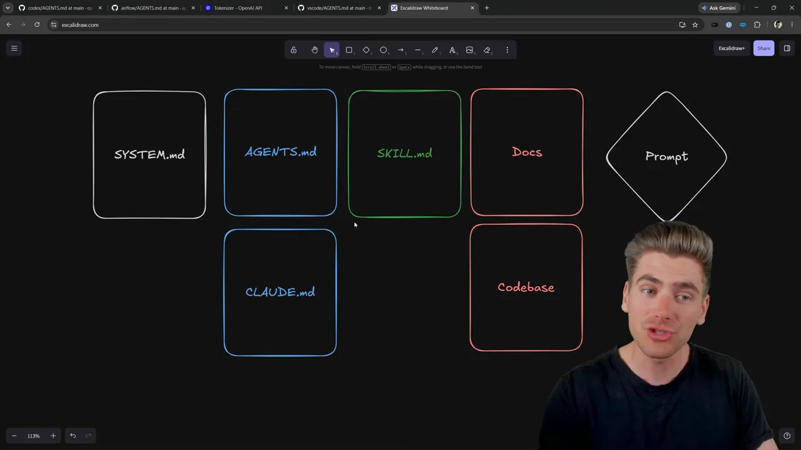
CLAUDE.md와 스킬 설명이에요. Kyle 강의 01:00에서 보기홀먼 영상은 공식 문서의 시각화 화면으로 같은 얘기를 해요. 첫 메시지를 치기도 전에 시스템 프롬프트, 자동 메모리, 스킬 설명, 전역과 프로젝트 CLAUDE.md가 컨텍스트 윈도우를 이미 차지하고 있어요. 홀먼은 CLAUDE.md를 대화가 오갈 때마다 통째로 내는 비용으로 보고, 그 내용의 90%는 지금 하는 작업과 상관이 없다고 말해요.
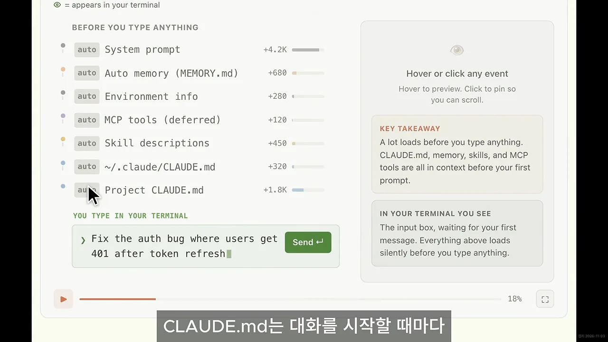
CLAUDE.md예요. 아무것도 묻기 전에 이미 실려 있어요. 홀먼 영상 01:30에서 보기한 단어 답에 5만 토큰
263배 실험은 이걸 숫자로 재요. "한 단어로 답해: 하늘 색?"을 평소대로 보내니 답은 '파랑' 한 단어인데 보낸 토큰은 53,043개였어요. 도구를 끄고, 설정 파일을 읽지 않게 막고, 시스템 프롬프트를 한 줄로 바꿔 보내니 574토큰이었어요. 약 70분의 1이에요. 발표자의 CLAUDE.md 하나만 약 2만 1천 토큰이었어요.
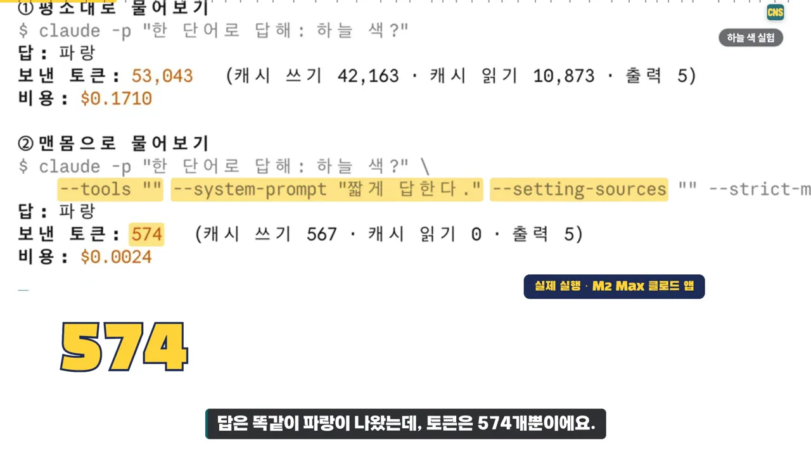
Kyle 강의는 남의 저장소에서 같은 문제를 찾아요. Apache Airflow의 AGENTS.md는 537줄, 약 8,600토큰이었어요. 발표자는 컨텍스트 창이 100만 토큰이어도 10만~20만 토큰쯤부터 결과가 눈에 띄게 나빠진다고 봐요. 10만 토큰을 기준으로 잡으면 이 파일 하나가 거의 10%를 차지해요.
캐시가 있어도 공짜는 아니에요
매번 똑같이 반복되는 앞부분은 프롬프트 캐싱으로 싸져요. 공식 플러그인 4개 영상은 캐시가 먹으면 그 부분을 10분의 1 값으로 깎아 준다고 설명해요. 263배 실험은 캐시 읽기 단가를 입력의 20분의 1로 잡았어요. 그런데 캐시는 앞부분이 글자 하나까지 같을 때만 읽기로 처리돼요. 앞쪽이 조금만 달라지면 그 뒤는 전부 새로 쓰고, 처음 캐시에 쓸 때는 입력값의 두 배를 내요.
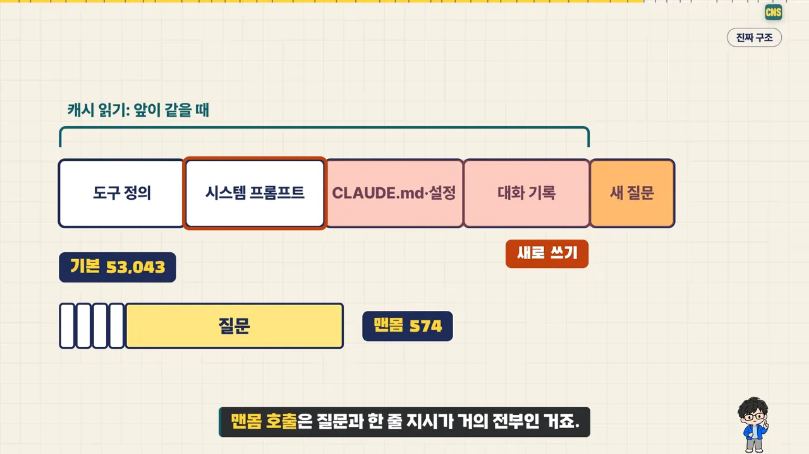
CLAUDE.md는 대화 기록보다 앞에 있어서, 여기를 고치면 그 뒤가 다 새로 쓰여요. 263배 실험 09:39에서 보기기본 호출은 이 띠가 5만 토큰이 넘고, 맨몸 호출은 질문과 한 줄 지시가 거의 전부예요. 싼 걸 수천 번 읽으면 결국 큰 덩어리가 돼요. 세 영상이 각자 자기 기록을 열어 봤는데 숫자가 거의 같아요.
- 263배 실험: 일주일 대화 103개, 호출 7,923번에서 토큰의 98.7%가 캐시 읽기였어요. 비용으로는 캐시 읽기가 61.7%, 캐시 쓰기 약 27%, 출력 약 11%였어요.
- 왕초보 가이드: Claude Code 기록 438개에서 클로드가 읽은 것의 97%가 이미 읽은 걸 다시 읽은 것이었어요. 대화가 길수록 매번 처음부터 다시 읽기 때문이에요.
- 공식 플러그인 4개: session-report의 데모 리포트에서 총 1.01B 토큰 중 96.9%가 캐시 읽기였어요.
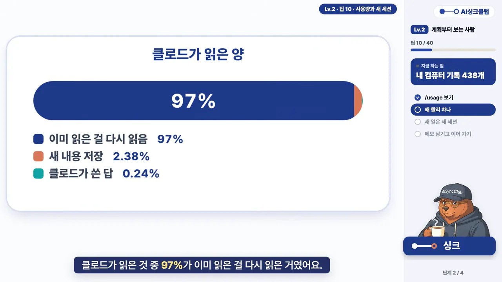
CLAUDE.md는 어떻게 불어나나요
263배 실험의 CLAUDE.md는 지적받을 때마다 한 줄씩 적어 온 파일이었어요. 10월 21일 6,136바이트에서 닷새 만에 43,373바이트, 일곱 배가 됐어요. 이 크기면 일주일 7,900번 호출마다 2만 토큰씩 다시 실려요.
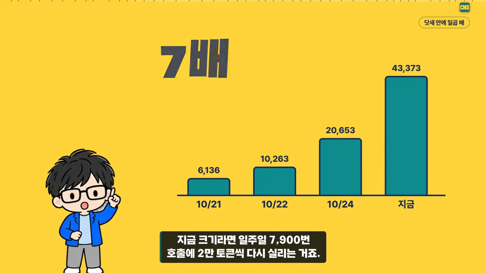
짐을 줄이는 것과 왕복을 줄이는 것
그렇다고 CLAUDE.md만 줄이면 끝나는 건 아니에요. 263배 실험은 유튜브 제목 후보 10개를 뽑는 같은 일을 일곱 방식으로 세 판씩 돌렸어요. 일곱 방식 모두 검사를 30개 중 30개 통과했어요.
| 방식 | 세 판 평균 | 기준 대비 |
|---|---|---|
| 통째로 맡기기 (Opus 에이전트) | $1.0071 | 100% |
+ CLAUDE.md 다이어트 | $0.9316 | 92.5% |
| 판정만 코드로 | $0.8192 | 81.3% |
| + 일꾼 도구만 끔 | $0.7161 | 71.1% |
| 일꾼 맨몸 (Opus) | $0.0740 | 7.4% |
| 일꾼 맨몸 (Sonnet) | $0.0397 | 1/25 |
| 일꾼 맨몸 (Haiku) | $0.0038 | 1/263 |
CLAUDE.md의 '배운 것' 목록을 lessons.md로 빼서 필요할 때만 읽게 했더니 10%도 안 줄었어요. 턴 수가 11~13번으로 늘어 아낀 걸 도로 썼거든요. 발표자는 비용을 한 번에 싣는 양 × 다시 싣는 횟수 × 모델 단가로 정리해요. 통째로 맡기는 한 짐 무게보다 몇 번 오가느냐가 비용을 정하고, 크게 줄인 건 횟수와 단가를 함께 깎은 방식이었어요(8절). 그래도 턴마다 1만 수천 토큰을 덜 싣는 건 이득이라 정리할 가치는 있다고 해요.
규칙은 어디에 둘까요
규칙 하나를 적을 자리는 여러 곳이에요. CLAUDE.md, 거기서 링크한 문서, 스킬, 훅, 서브에이전트예요. 홀먼 영상은 이 자리들을 컨텍스트 윈도우를 언제, 얼마나 차지하느냐로 갈라요. 홀먼이 플러그인과 에이전트 팀을 설계하며 쓴 기준이에요.
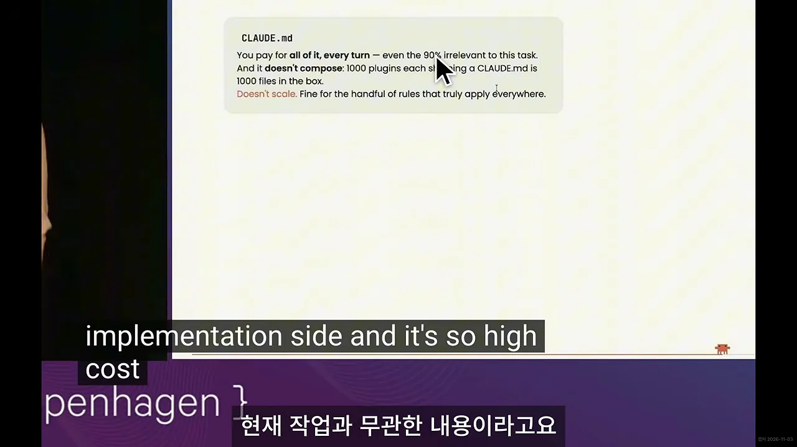
CLAUDE.md를 평가한 슬라이드예요. 플러그인 1,000개가 각자 CLAUDE.md를 들고 오면 버틸 수 없다는 게 'Doesn't scale'의 뜻이에요. 홀먼 영상 00:56에서 보기아래 그림은 다섯 자리가 컨텍스트를 차지하는 모양을 나란히 놓은 거예요. 막대가 길수록 매 요청에 많이 실려요.
CLAUDE.md만 늘 통째로 실려요. 나머지 넷은 필요할 때만 자리를 차지해요. 그래서 홀먼은 CLAUDE.md에 모든 작업에 통하는 몇 줄만 남기라고 해요.어떤 규칙을 어디에 둘까요
여러 영상이 같은 방향으로 나눠요. 홀먼 영상의 정리를 뼈대로 다른 영상의 기준을 붙이면 이래요.
| 이런 규칙이면 | 자리 | 왜 거기인가요 | 말한 영상 |
|---|---|---|---|
| 정말 모든 작업에 통하는 몇 줄 | CLAUDE.md | 매 요청에 실리니 늘 필요한 것만 둬요 | 홀먼 영상, Kyle 강의 |
| 거의 모든 작업에 쓰이지만 길고 영역별인 규칙(CSS(Cascading Style Sheets), API(Application Programming Interface), 테스트 규칙) | CLAUDE.md에서 링크한 docs/ 문서 | 그 영역 일을 할 때만 열려요 | Kyle 강의 |
| 특정 시점에 쓰는 절차, 가끔 하는 작업(인증, PR(Pull Request) 내기) | 스킬 | 짧은 설명만 늘 있고 본문은 쓸 때 불러와요 | 홀먼 영상, Kyle 강의, Ivanna 인터뷰 |
| 엄밀하게 지켜져야 하는 규칙(비밀 키 노출, 되돌릴 수 없는 삭제) | 훅 | 적어 둔 부탁이 아니라 그 순간 저절로 돌아요 | 홀먼 영상, 왕초보 가이드 |
| 과정보다 결과만 필요한 일(검색, 로그 훑기) | 서브에이전트 | 별도 창에서 일하고 요약만 돌려줘요 | 홀먼 영상 |
| 어디에도 둘 필요가 없거나 한 달 동안 필요 없었던 규칙 | 삭제 | 남겨 두면 비용만 들어요 | 홀먼 영상 |
홀먼은 스킬을 '언제 읽어야 하는지 짧은 요약이 붙은 CLAUDE.md'라고 설명해요. 공식 문서도 같은 지시를 계속 붙여 넣고 있다면 스킬을 만들라고 하고, CLAUDE.md와 달리 스킬 본문은 쓸 때만 실린다고 적어 뒀어요.

메타 Eval 세미나의 발표자는 같은 신호를 실전 규칙으로 써요. 에이전트에게 같은 말을 두 번 하고 있다면, 그건 프롬프트가 아니라 하네스로 옮길 때예요. 아래 표는 같은 문제를 대화로 고칠 때와 세팅으로 고칠 때를 맥락, 확인, 규칙 세 줄로 나눠요. 오른쪽 열이 이 합본의 자리와 그대로 겹쳐요. 맥락은 CLAUDE.md와 세컨드 브레인(4절), 확인은 정한 케이스로 채점하기(9절), 규칙은 훅과 체크(7절)예요.
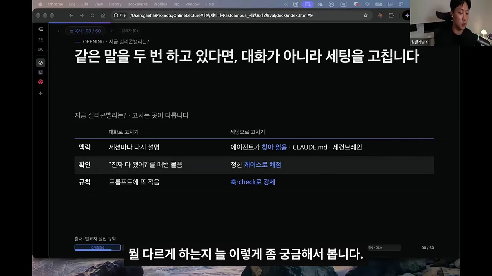
서브에이전트는 반대로 메인 창 바깥에서 돌아요. 홀먼은 '스킬은 컨텍스트 안에서, 서브에이전트는 밖에서' 돈다고 정리해요. 서브에이전트의 창에 시스템 프롬프트와 CLAUDE.md, 파일을 읽은 기록이 쌓여도 메인에는 요약만 돌아와요.
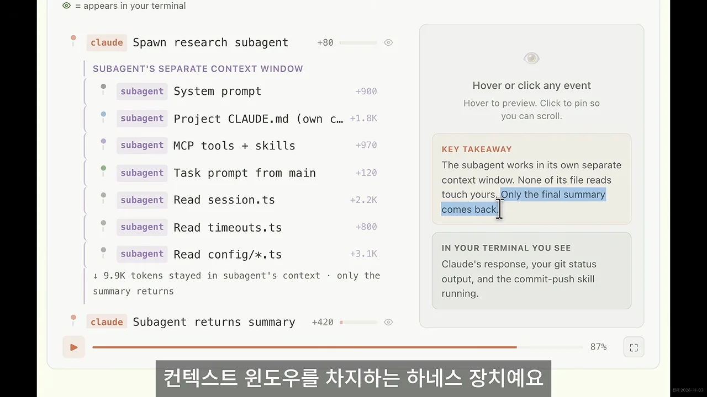
CLAUDE.md는 부탁이에요
CLAUDE.md에 적었다고 지켜지는 것도 아니에요. 홀먼 영상의 발표자도 처음엔 규칙을 잔뜩 적었지만 클로드 코드가 무시하고 코드를 썼다고 해요. 공식 문서는 CLAUDE.md가 시스템 프롬프트가 아니라 사용자 메시지로 전달되고, 엄격하게 지킨다는 보장은 없다고 적어 뒀어요. 왕초보 가이드도 CLAUDE.md는 부탁이라 가끔 빠지니, 꼭 지킬 규칙은 훅으로 만들라고 해요(7절).
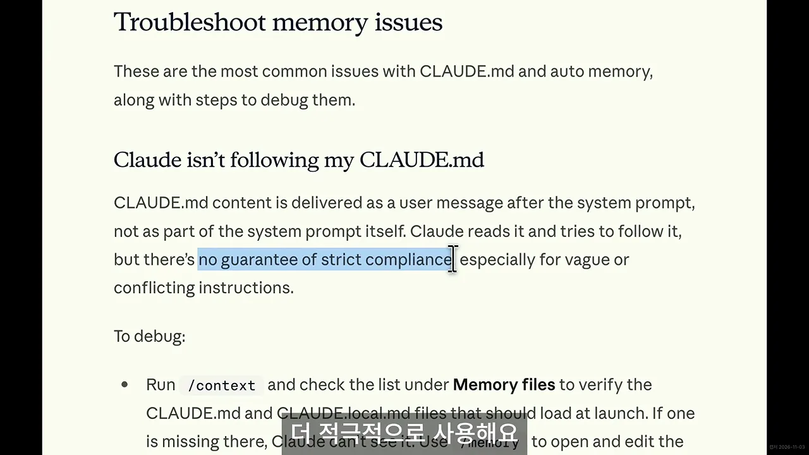
원칙도 시스템 프롬프트 대신 스킬로
pstack 해설도 같은 이유를 대요. Lauren Tan은 자기 원칙을 시스템 프롬프트에 몰아넣지 않고 스킬 여러 개로 나눠, 언제 무엇을 꺼낼지 색인만 둬요. 시스템 프롬프트는 매 메시지마다 통째로 읽히니 지금 일과 상관없는 규칙에도 토큰을 쓰게 되거든요.
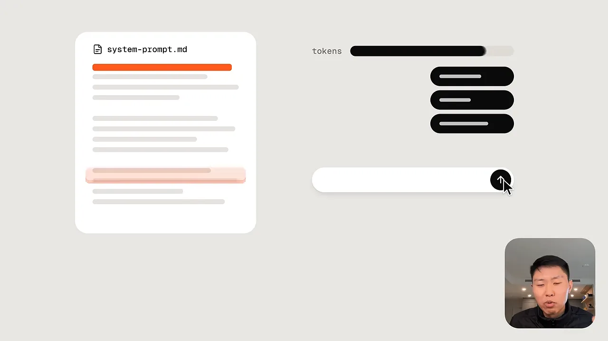
지울 규칙은 /doctor에게 먼저 물어요
홀먼 영상은 정리를 이렇게 끝내요. CLAUDE.md가 200줄을 넘으면 늘 필요한 규칙 말고는 전부 스킬로 빼 달라고 하고, 지울 규칙은 /doctor로 후보부터 받아요. 화면 예시에서는 프로젝트 CLAUDE.md의 '답변은 한국어로 한다'가 전역 CLAUDE.md와 겹쳐서 삭제 후보로, '파일 작업은 이 폴더 안에서만 한다'는 유지 권장으로 나왔어요.
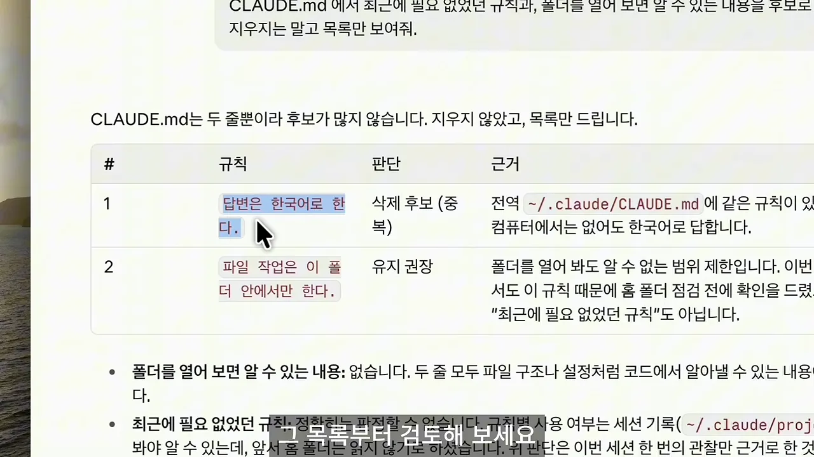
CLAUDE.md는 설명서가 아니라 지도
세컨드 브레인 18팁은 CLAUDE.md(AGENTS.md)를 한 문장으로 정리해요. 설명서가 아니라 지도예요. 회사 정보나 규칙 본문을 다 넣는 대신, 어디에 무엇이 있고 언제 무엇을 열지를 적어요. Kyle 강의, 게임 팀 세팅, 9 Skills도 같은 쪽으로 가요.
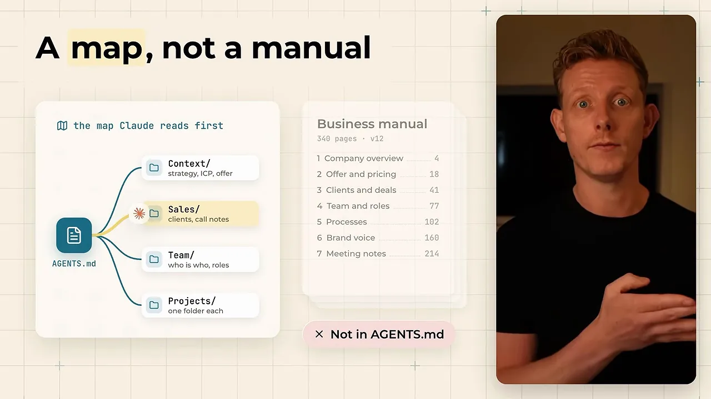
AGENTS.md에 들어갈 건 왼쪽이에요. 세컨드 브레인 18팁 07:34에서 보기무엇을 남기고 무엇을 뺄까요
Kyle 강의는 데모 프로젝트의 AGENTS.md를 직접 줄여 보여 줘요. 남긴 건 네 가지예요.
- 프로젝트 소개 한두 문장
pnpm처럼 표준이 아닌 도구, 모든 작업에 쓰이는 특이한 스크립트- 큰 틀의 폴더 구조. 파일 단위로 적으면 이름과 위치가 금방 바뀌어 낡은 정보가 AI를 헷갈리게 해요
docs/안의 세부 규칙 문서로 가는 링크 한 줄씩
뺀 것도 분명해요. '시작하기' 절은 지워요. 에이전트는 이미 세팅된 프로젝트에서 코드를 쓰는 사람과 같아서 설치 안내가 필요 없어요. CSS, API, 테스트 규칙은 docs/ 문서로 옮기고, PR 제출이나 배포 절차도 문서로 빼서 그 일을 할 때만 읽히게 해요.
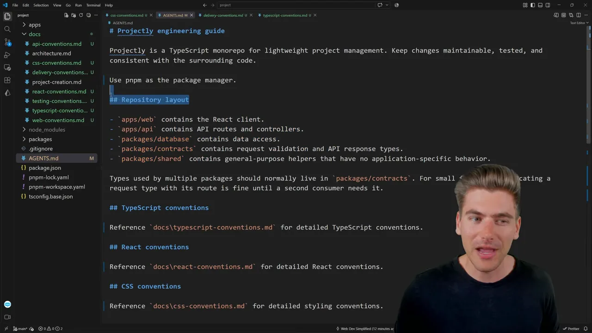
지도에는 라우팅 표와 인덱스를
세컨드 브레인 18팁은 지도의 핵심을 라우팅 테이블로 봐요. 폴더마다 무엇이 있고, 언제 쓰고, 새 내용을 어디 저장할지를 한 줄씩 적어요. 지도가 없으면 Claude는 모든 걸 뒤져서 토큰을 낭비하고 엉뚱한 맥락을 가져와요. 지도가 있으면 영업 통화 준비를 부탁받았을 때 영업 폴더의 고객 노트와 오퍼 문서만 열어요.
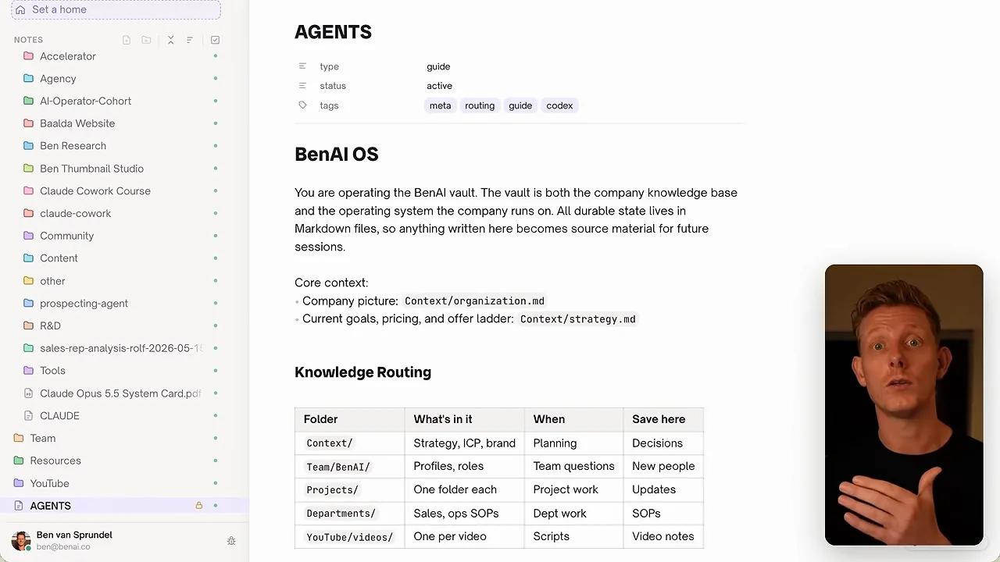
같은 영상은 지도를 지키는 팁을 두 개 더 줘요. 하나는 폴더 구조를 자주 바꾸지 않기예요. 고객 폴더를 '진행 중'과 '지난'으로 쪼개면, 지도를 고칠 때까지 Claude는 옛 위치에 계속 저장해요. 다른 하나는 하위 폴더마다 작은 인덱스 파일이에요. 파일이 수십, 수백 개 쌓이면 맨 위 지도만으로는 어느 파일을 열지 몰라서, 하위 폴더 안에 무엇이 있는지 적은 '작은 agents.md'를 둬요. 안드레이 카파시가 자기 지식 베이스에 쓰는 방식이라고 해요.
코드베이스에는 영향 지도와 '왜' 기록을
메타 Eval 세미나는 지도를 코드베이스로 넓혀요. 에이전트는 어제 찾은 걸 오늘 기억하지 못해서, 같은 저장소를 매번 처음부터 다시 뒤져요. 발표자가 스킬 없는 에이전트에게 파일 하나를 바꾸면 깨질 수 있는 파일을 세 번 찾게 했더니, 정답 394개를 거의 다 찾긴 했어요. 다만 세 번 다 import를 따라가는 스크립트를 처음부터 새로 짰어요.
그래서 발표자는 개발자용 세컨드 브레인을 두 부분으로 나눠요. 코드 그래프는 '어디까지 영향이 가나'를 답하고, 코드 메모리는 설계 문서, 장애 기록, 커밋에서 '왜 이렇게 만들었나'를 답해요. 그래프는 LLM(Large Language Model)이 그리지 않고 컴파일러와 인덱서가 결정적으로 만들어서, 모델이 약해도 품질이 그대로예요. 아래 표는 같은 질문에 세 방법이 돌려준 것과 빠진 것을 나란히 놓았어요.
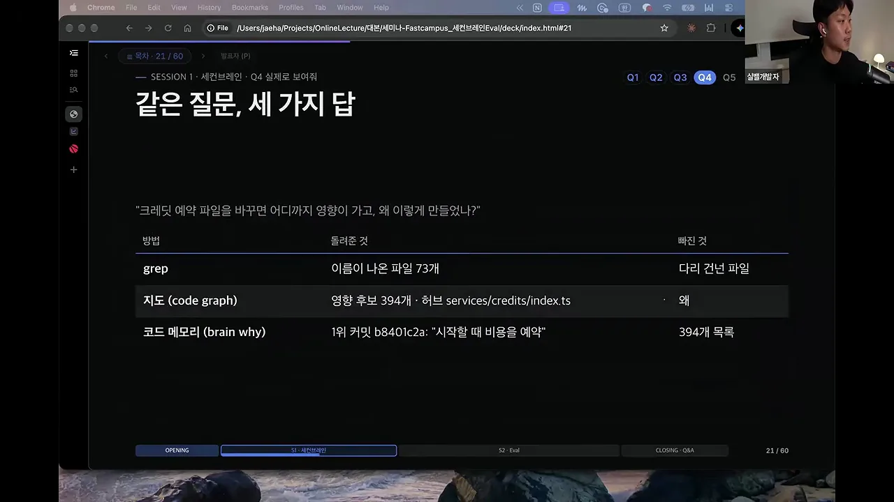
지도를 지키는 말도 앞의 팁과 같아요. 발표자는 낡은 컨텍스트가 없는 것보다 나쁘다고 해요. 그리고 지도가 답할 때마다 complete, truncated(50개까지만 보여 줘서 잘림), partial(못 찾은 길이 있음) 라벨을 붙여서, 잘린 목록을 전부라고 말하지 않게 해요. 못 찾은 import는 추측으로 잇지 않고 '못 찾은 길'로 적어 둬요.
전역, 프로젝트, 하위 폴더
CLAUDE.md 입문은 파일이 놓인 자리에 따라 적용 범위가 달라진다는 걸 보여 줘요. 전역 CLAUDE.md는 내 컴퓨터 어디서 클로드를 켜든 들어가니 '나에 대한 정보'를 적고, 프로젝트 CLAUDE.md는 그 폴더에서만 적용되니 그 일의 지침을 적어요. 새 대화를 시작하면 전역 파일을 먼저 읽고 이어서 프로젝트 파일을 읽어요.
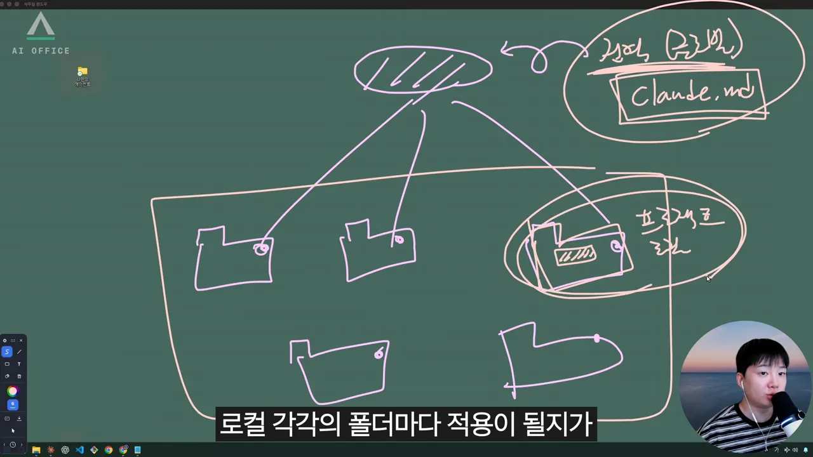
두 가지를 같이 알아 두면 좋아요. CLAUDE.md를 고친 뒤에는 새 대화창을 열어야 반영돼요. 이미 열린 대화는 예전 내용을 읽은 채로 돌아가요(CLAUDE.md 입문). 그리고 모노레포라면 하위 폴더마다 AGENTS.md를 둘 수 있어요. Kyle 강의의 설명으로는 어느 파일이 실리는지가 에이전트를 어느 폴더에서 실행했는지로 정해져요. 루트에서 열면 루트 파일만, apps/api에서 열면 루트와 그 폴더 파일이 함께 실려요. 9 Skills도 모노레포라면 어디서나 참인 내용만 루트에 두고 각 부분 옆에 따로 두라고 해요.
한 파일만 고치게 하기
Claude Code는 CLAUDE.md, Codex는 AGENTS.md를 읽어요. 두 파일을 따로 두면 에이전트가 나중에 규칙을 덧붙일 때 한쪽에만 적어서 어긋나기 쉬워요. 해법은 두 가지가 나와요.
- 심볼릭 링크(Kyle 강의):
ln -s AGENTS.md CLAUDE.md로CLAUDE.md를AGENTS.md의 링크로 만들어요. - 한 줄짜리
CLAUDE.md(게임 팀 세팅):CLAUDE.md에는@AGENTS.md한 줄만 두고 규칙은AGENTS.md한 파일에 모아요.
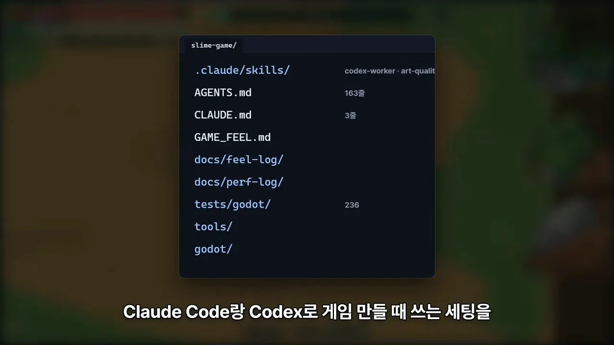
AGENTS.md는 163줄, CLAUDE.md는 3줄이에요. 규칙을 고칠 곳이 한 군데뿐이에요. 게임 팀 세팅 00:10에서 보기세컨드 브레인 18팁은 하나를 경고해요. 이미 claude.md가 있다면 이름을 agents.md로 바꾸고 둘을 같이 두지 말라고 해요. claude.md가 있으면 Claude가 그것만 읽고 agents.md는 건너뛴다는 거예요. 리뷰 루프는 @ 링크를 반대 방향으로 써요. 따로 시키지 않으면 읽히지 않는 review.md를 CLAUDE.md에서 @review.md로 링크해, 새 세션마다 같이 불러오게 해요. @로 건 파일은 링크가 아니라 내용이 함께 실린다는 뜻이니, 늘 필요한 파일에만 써요.
맨 위에 둘 몇 줄
게임 팀 세팅은 모든 규칙 파일에 들어갈 기본 네 가지를 먼저 꼽아요. 정보 없이 코딩하지 말 것, 무조건 동의하지 말 것, 테스트만 보고 완료라고 하지 말 것, 같은 실수를 반복하지 말 것이에요. 여기에 맨 위에 두는 줄을 보태요.
- "최신 사용자 지시가 이 파일보다 우선한다." 파일이 낡아도 방금 한 말을 따르게 하려고요.
- "사용자가 직접 고친 파일은 덮어쓰지 않는다." 손으로 고친 그림이나 설정을 AI가 자기 버전으로 다시 덮는 걸 막아요.
- "자동 검사 통과는 재미나 미술 승인이 아니다." 그래서 AI가 보고할 때 코드로 확인한 것, 실제 화면·소리로 본 것, 확인 못 한 것을 나눠 말하게 해 놨어요.
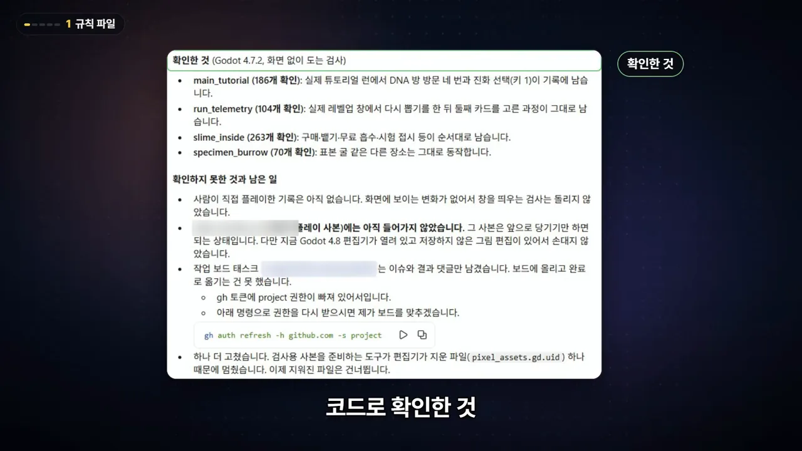
세컨드 브레인 18팁은 팀이 함께 쓰는 지도에 한 줄을 더 넣으라고 해요. AI 에이전트는 사실보다 말하는 사람에게 동의하는 경향이 있어서, 영업 담당의 Claude는 영업 담당에게, 마케터의 Claude는 마케터에게 동의할 뿐이에요. 그래서 '항상 우리의 목표와 전략에 따라 회사에 가장 이로운 쪽으로 행동하고, 요청이 그와 충돌하면 그냥 동의하지 말고 분명히 말하라' 같은 줄을 넣어요.
커지지 않게 지키는 법
CLAUDE.md는 지적할 때마다 한 줄씩 붙으며 자라요(2절). 게임 팀 세팅의 AGENTS.md도 한때 466줄까지 불어 거의 일기장이 됐대요. 지금도 유효한 규칙만 남기라고 시켰더니 117줄이 됐고, 지운 내용은 AGENTS_HISTORY.md로 옮겼어요.

실수를 봤을 때 어디에 적을지는 영상마다 조금씩 달라요.
| 영상 | 실수를 봤을 때 | 파일을 지키는 장치 |
|---|---|---|
| Kyle 강의 | AI가 실제로 틀린 걸 볼 때마다 알맞은 문서에 규칙을 하나씩 더해요 | 처음부터 AI에게 AGENTS.md를 만들라고 시키지 않아요. 장황한 파일이 나와요 |
| 왕초보 가이드 | "이거 CLAUDE.md에 적어 둬"라고 해요 | /init으로 만들고 200줄 안으로 유지하고, 가끔 예전 강조 문구를 청소해요 |
| 게임 팀 세팅 | 그 작업 폴더의 메모에 날짜와 사용자가 한 말을 그대로 적어요 | 규칙 파일에는 오래 갈 규칙만 한두 줄로 올리고, 지운 건 기록 파일로 옮겨요 |
| 리뷰 루프 | 리뷰어가 같은 실수를 계속 찾으면 review.md 맨 아래 'Learned rules'에 한 줄 넣어요 | 루프가 끝날 때 규칙을 제안하고, 사람이 승인하면 넣어요 |
도구의 도움도 받을 수 있어요. 공식 플러그인 4개의 claude-md-management에는 두 도구가 있어요. 세션 끝에 한 번 돌리는 /revise-claude-md는 이번 대화에서 새로 알게 된 명령어, 작업 패턴, 함정을 CLAUDE.md 후보로 뽑아 줘요. 주기적으로 돌리는 claude-md-improver는 모든 CLAUDE.md를 여섯 기준으로 100점 만점 채점하고, 작동하지 않는 명령어나 빠진 설정도 짚어 줘요.
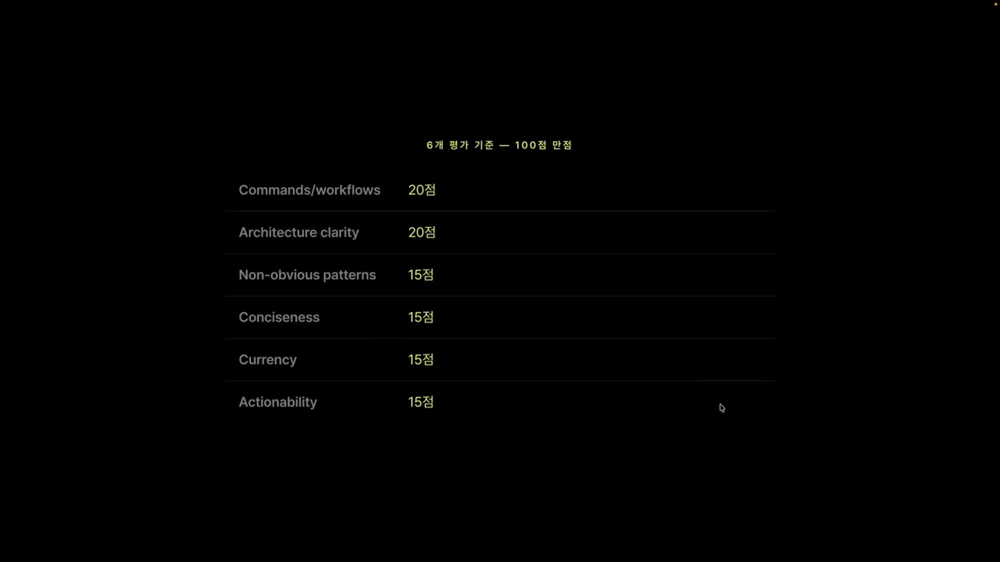
9 Skills의 audit과 sync 스킬도 같은 일을 해요. 실제 프로젝트 구조를 읽고 컨텍스트 파일을 쓰되, 사람이 직접 쓴 내용은 덮어쓰지 않고 빈 곳만 채워요. 코드가 문서와 어긋나면 고치지 않고 표시만 해서 사람이 정하게 해요. 세컨드 브레인 18팁은 이 청소를 1~2주마다 예약 작업으로 돌리고, 지도와 인덱스를 고치며 200줄 아래로 유지해요.
스킬을 만드는 규칙
스킬 규칙 7가지는 Anthropic 공식 가이드에서 일곱 규칙을 골라, 이미 만든 스킬을 어떻게 고칠지 알려 줘요. 결론은 이래요. 스킬을 잘 만드는 일은 문장을 잘 쓰는 일보다 파일을 어떻게 놓고 무슨 검사를 돌리느냐에 달렸어요. 이 절은 그 일곱 규칙을 뼈대로, 다른 영상이 보탠 내용을 제자리에 끼워 넣었어요. 일곱째 규칙 '쓸 모델 전부로 테스트하기'는 11절에서 따로 다뤄요.
언제 스킬로 만들까요
Ivanna 인터뷰는 신호를 두 개로 꼽아요. 하나는 반복이에요. 코드 리뷰처럼 매번 같은 순서를 밟는 일이라면, 그 순서를 템플릿이나 단계별 지침으로 적어 둔 게 곧 스킬이에요. 다른 하나는 반복하지 않아도 자동화하고 싶은 큰 일이에요. 앱에 광고를 붙이는 일처럼 한 번이면 끝나지만 덩치가 큰 일은 스킬을 찾아 써서 끝내고, 다 쓰면 프로젝트에서 빼요. 홀먼 영상이 인용한 공식 문서의 신호도 같아요. 같은 지시를 계속 붙여 넣고 있다면 스킬로 옮길 때예요(3절).
메타 Eval 세미나가 소개한 메타 엔지니어링 블로그 사례도 같은 쪽이에요. 성능 문제 하나를 진단하는 데 사람이 10시간 걸렸는데, 표준 프로파일링 도구를 MCP(Model Context Protocol)로 만들고 전문가의 진단 순서를 스킬로 만들어 주자 에이전트가 30분 만에 끝냈어요.
만드는 일도 맡길 수 있어요. 왕초보 가이드는 /skill-creator가 인터뷰하며 스킬을 써 준다고 하고, 일을 한 번 끝낸 뒤 "방금 한 거 스킬로 만들어 줘"라고 해도 된다고 해요. Ivanna 인터뷰는 Skill Creator를 추천 1번으로 꼽아요. SKILL.md만 쓰고 끝내기 쉬운데, 이 스킬은 잊기 쉬운 scripts, references, assets까지 만들어 줘요. 다만 에이전트가 던지는 질문에 답하며 다듬고, 결과물은 꼭 직접 읽어 보라고 해요.
설명 한 줄이 스킬을 불러요
Kyle 강의는 SKILL.md 맨 위의 이름과 설명이 모든 요청에 실려 간다는 걸 화면으로 짚어요. AI는 이 목록을 보고 어떤 스킬을 열지 골라요. 그래서 설명에는 언제 쓰는지가 들어가야 해요. Ivanna 인터뷰의 '새 엔드포인트 붙이기' 스킬은 설명란에 '새 기능을 추가할 때 사용'이라고 적어 두어서, 에이전트가 새 기능 요청을 받을 때마다 이 스킬과 assets 폴더의 템플릿을 읽어요.
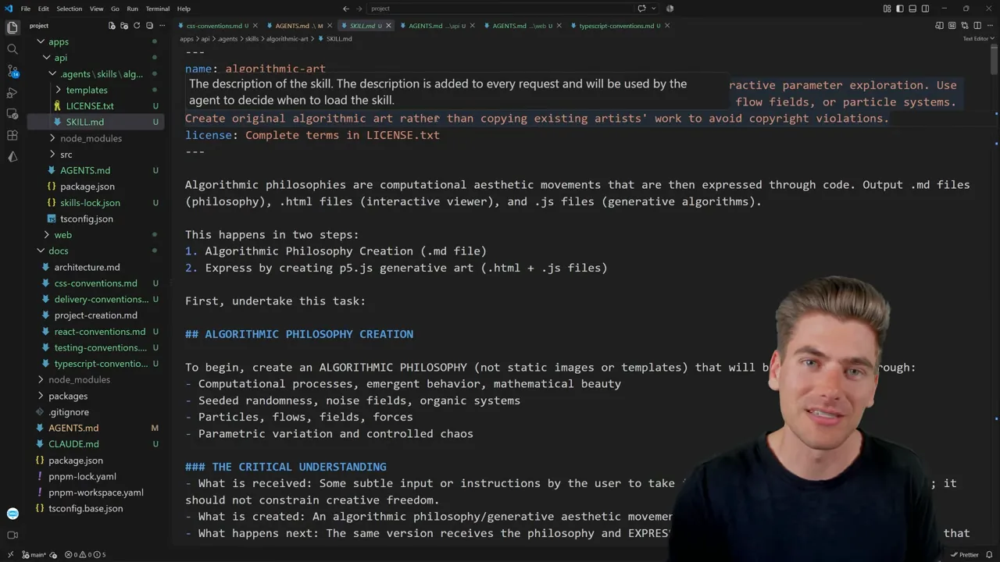
메타 Eval 세미나는 반대쪽도 적으라고 해요. 발표자의 세컨드 브레인 스킬은 큰 작업에서는 좋았지만, 작고 로컬한 작업에서는 오히려 느려졌어요. 그래서 SKILL.md의 라우팅 표에 부르지 말 때를 넣었어요. 아는 파일 하나짜리 작은 작업이면 brain을 부르지 말고 그 파일을 읽으라는 줄이에요. 그 뒤 작은 작업에서 부른 횟수는 0/6이었어요. 다만 스킬 로드율이 76.8%(53/69)라서 설명은 더 다듬어야 한대요. 설명이 실제로 스킬을 부르는지는 Eval로 재요(9절).
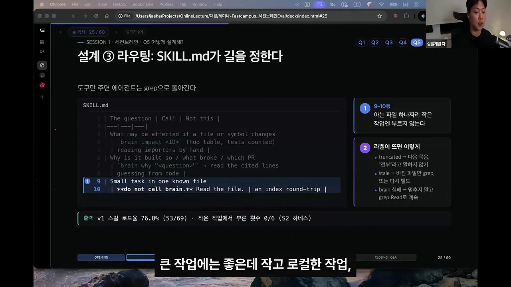
SKILL.md는 목차처럼, 참조는 한 단계만
공식 가이드는 SKILL.md 본문을 500줄 안으로 두고 전체의 목차처럼 쓰라고 해요. 나머지는 따로 빼고, 클로드는 필요할 때만 그 파일을 열어요. 정확히 똑같이 해야 하는 일은 스크립트 폴더에 둬요. 여러 분야를 다루면 파일도 분야별로 나눠요. 매출을 물을 때 마케팅 파일은 열리지 않아요.

처음엔 짧은 목차만 두고 필요할 때 자세한 파일을 열게 하는 이 구성을 공식 가이드는 점진적 공개 패턴이라고 불러요. 파일이 파일을 가리키는 사슬은 피해요. SKILL.md가 advanced.md를, 그 파일이 다시 details.md를 가리키면 끝에 있는 정보는 앞부분만 읽힐 수 있어요. 참고 파일은 전부 SKILL.md에서 바로 연결해요.
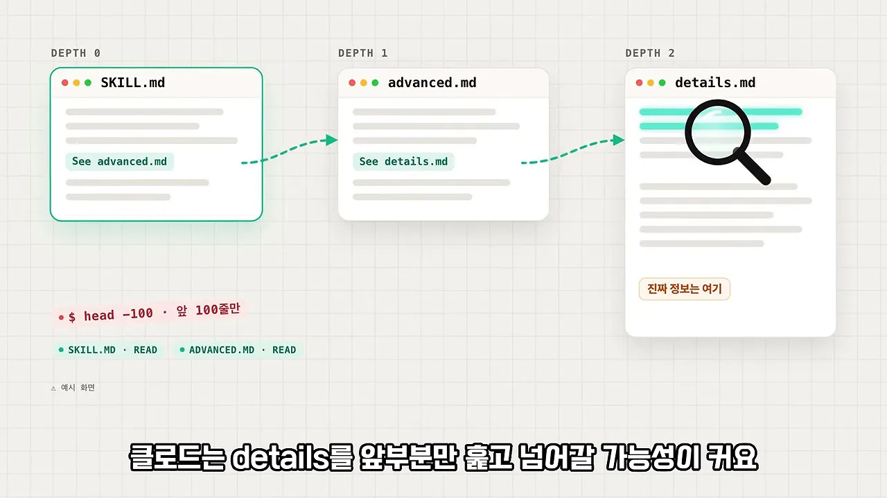
100줄 넘는 참고 파일에는 목차부터
영상은 클로드가 긴 참고 파일을 head -100으로 앞 100줄만 보고 그 파일이 필요한지 판단할 때가 많다고 해요. 그래서 100번째 줄 아래에 쓴 규칙은 없는 것과 같다고 말해요. 해결은 맨 위에 목차를 다는 거예요. 그러면 클로드가 전체를 읽을지, 필요한 곳으로 바로 갈지 고를 수 있어요.
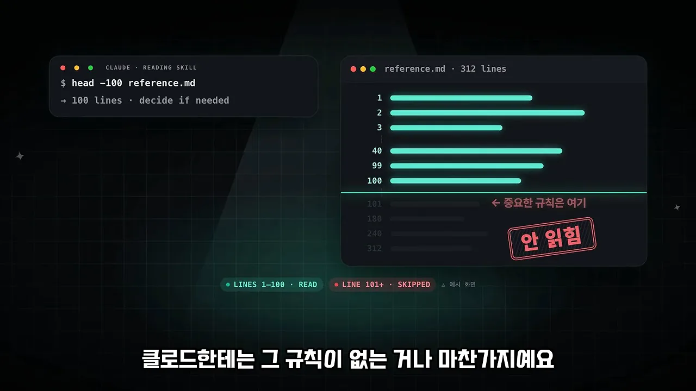
할 일도 단순해요. 클로드에게 100줄 넘는 참고 파일을 찾아 제목에 맞춰 목차를 넣으라고 시키면 돼요.
자유도는 단계마다 정해요
스킬을 얼마나 자세히 쓸지는 그 일이 얼마나 쉽게 깨지고, 얼마나 매번 달라지는지 보고 정해요.
| 자유도 | 쓰는 모양 | 맞는 일 |
|---|---|---|
| 높음 | 글로 쓴 지시 | 코드 리뷰, 영업 통화 돌아보기, 링크드인 글 초안처럼 방법을 열어 둬도 되는 일 |
| 중간 | 설정값이 있는 템플릿 | 매주 보내는 고객 보고서처럼 모양은 정해져 있고 조금 달라져도 되는 일 |
| 낮음 | 정해진 스크립트 | 데이터베이스 이전, 청구서 발행, 환불, 회원 삭제처럼 실수하면 안 되는 일 |
자유도는 스킬 하나 안에서도 단계마다 달라요. 단계마다 "클로드가 이걸 다르게 하면 무슨 일이 생기지?"를 물어요. 별일 없으면 풀어 주고, 큰일 나면 잠가요. 잠근다는 건 보통 글을 더 쓰는 게 아니라 스크립트로 바꾸는 거예요.

체크리스트와 스스로 고치는 루프
복잡한 일에는 체크리스트를 줘요. 클로드가 답변에 복사해 두고 하나씩 지워 가요. 다만 순서가 중요할 때만 쓰고, 상관없으면 빼요. 영상이 꼭 보여 주려는 건 "인용이 빠졌으면 3단계로 돌아가라"는 한 줄이에요. 이 한 줄 덕분에 실패한 단계를 체크하고 넘어가지 않아요.
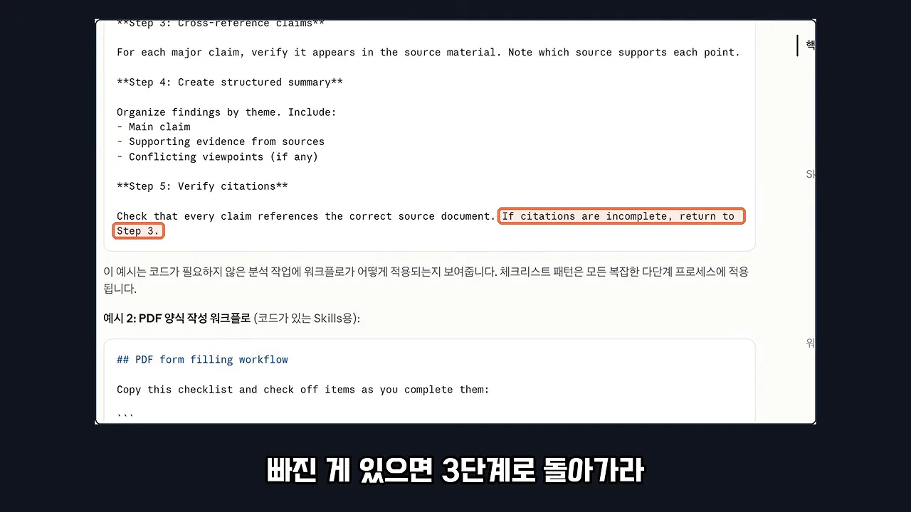
루프는 검사하고, 고치고, 통과할 때까지 반복하는 구조예요. 검사 기준이 꼭 코드일 필요는 없어요. 스타일 가이드나 브랜드 말투 문서도 돼요. 초안이 문서에 없는 이유로 걸리면 작업 끝에 클로드에게 새 규칙을 제안하게 하고, 승인한 규칙은 문서에 넣어요. 그러면 스킬이 쓸수록 나아져요.
세 스킬 묶음 비교는 단계를 건너뛰지 못하게 하는 장치를 하나 더 보여 줘요. 애디 오스마니의 스킬에는 AI가 단계를 건너뛸 때 댈 법한 핑계와 그 반박이 표로 적혀 있어요. "간단해서 테스트가 필요 없다", "직접 확인했으니 충분하다" 같은 핑계로 넘어가지 못하게 하려는 거예요.
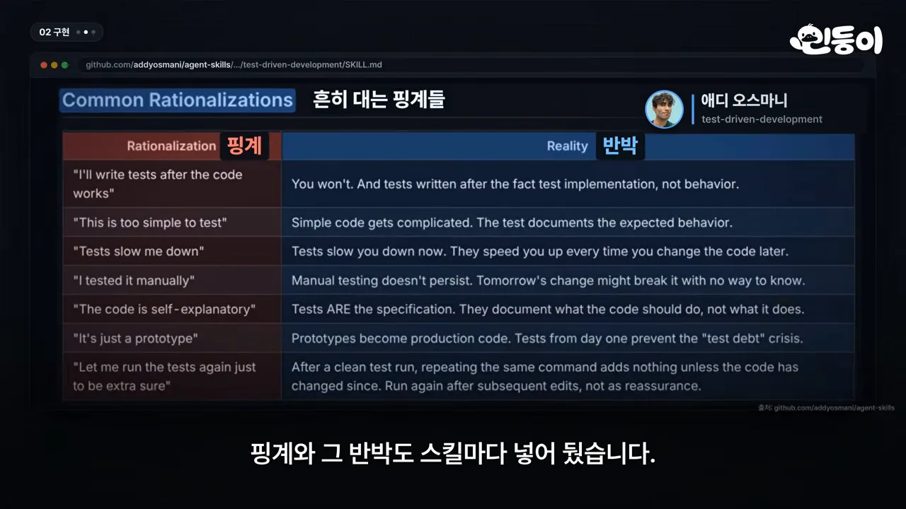
설치할 패키지까지 적어요
직접 만든 스킬은 내 노트북에서만 잘 돌기 쉬워요. 필요한 걸 오래전에 깔아 놓고 잊었기 때문이에요. "PDF 라이브러리로 처리해라"로 끝내지 말고, 설치할 패키지 이름까지 적어요. 이미 깔려 있으면 클로드가 알아서 건너뛴다고 해요. 다만 Claude API 환경은 실행 중 설치가 안 되니, 쓸 수 있는 패키지인지 먼저 확인해야 해요.

pip install pypdf 한 줄이 먼저 있어요. 다른 사람 컴퓨터에서도 돌게 하는 한 줄이에요. 스킬 규칙 7가지 10:17에서 보기설치는 반대쪽 위험과도 이어져요. 남이 만든 스킬이 시키지 않은 설치를 실행한 사례는 10절에서 봐요.
같은 참고 자료는 한 파일만
세컨드 브레인 18팁은 스킬 여러 개가 저마다 같은 문서의 사본을 들고 있는 걸 경고해요. 스킬 10개가 전략 문서 사본을 하나씩 가지고 있으면, 전략이 바뀔 때 10곳을 고쳐야 하고 결국 아무도 안 고쳐요. 참고 파일은 한 곳에 두고 스킬은 그 파일을 가리키게 하면 한 번 고쳐서 모든 스킬에 반영돼요. 브랜드 말투 가이드나 가격 문서가 그런 예예요.
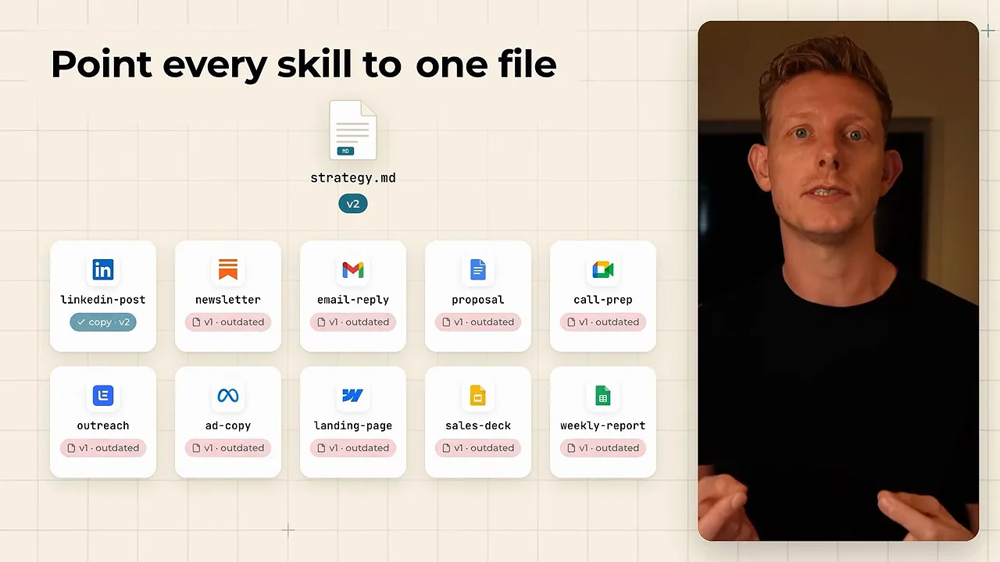
지시문은 어떻게 쓸까요
CLAUDE.md든 스킬이든 결국 문장으로 써요. 이 절은 그 문장을 어떻게 쓸지를 모았어요. 영상들이 반복해서 하는 말은 셋이에요. 역할 대신 과정과 도구를 주고, 강조 대신 이유를 대고, 원치 않는 행동은 그 행동을 정확히 짚어 막아요. 특정 모델 때문에 생긴 문장(서식 금지문, 진행 알림 요청)은 11절에 따로 모았어요.
역할 대신 최고의 사람이 거치는 과정
펠릭스 인터뷰는 "너는 뛰어난 엔지니어야"를 2024년에 유행한 방식이라고 해요. 지금 모델도 "훌륭한 회계사처럼 해"라고 하면 역할극을 하며 말투만 바꿔요. 대신 그 분야 최고의 사람이 어떤 단계를 거치고 어떤 도구를 쓰는지 묻고, 똑같이 쓰게 해요. 펠릭스의 말로는 '말은 다섯 살에게 하듯 쉽게, 도구는 최고로'예요.
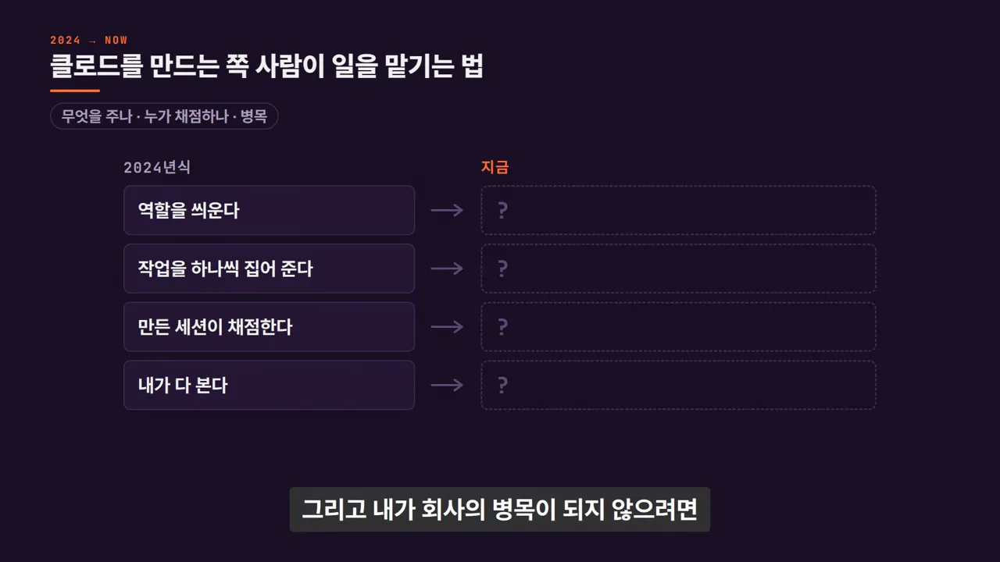
펠릭스는 기준도 결과가 아니라 과정에 둬요. 날씨 예시가 그래요. 모델이 기온을 찍어서 맞혔다면 통과가 아니라 실패예요. 위치를 제대로 찾고 믿을 만한 출처를 거쳤다면 0.5도 틀려도 그쪽이 더 나은 결과예요. 애니메이션도 클로드에게 좋은 애니메이션이 뭔지 가르친 게 아니라, 전문 애니메이터의 도구인 블렌더를 쓰게 했더니 결과가 좋아졌어요.
맡기기 전에 클로드에게 먼저 물어볼 네 가지도 소개해요. 펠릭스가 블로그에 쓴 '깊이 프롬프트'예요. 답을 다 받으면 내 프롬프트를 정확히 그걸 요구하도록 다시 써요.
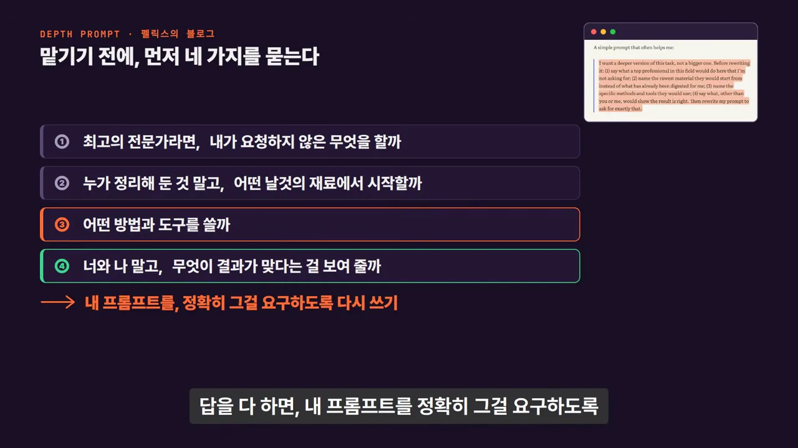
인터뷰는 한 걸음 더 나가요. 일을 작업으로 쪼개 맡기지 말고 "그다음에 일어났으면 하는 목표"를 맡기라고 해요. 크래시를 하나씩 집어 주던 펠릭스는 크래시 데이터 전체를 열어 주고 뭘 고칠지 클로드가 정하게 했어요.
무엇을, 왜, 누가 볼지, 언제 끝인지
왕초보 가이드는 클로드를 '똑똑하지만 우리 회사를 모르는 신입'으로 봐요. 그래서 무엇을, 왜, 누가 볼지, 어떤 모양으로를 함께 말해요. 통째로 맡기되 완료 조건을 붙여요. "합계가 원본과 같은지 확인하고, 같으면 끝내" 같은 문장이에요.
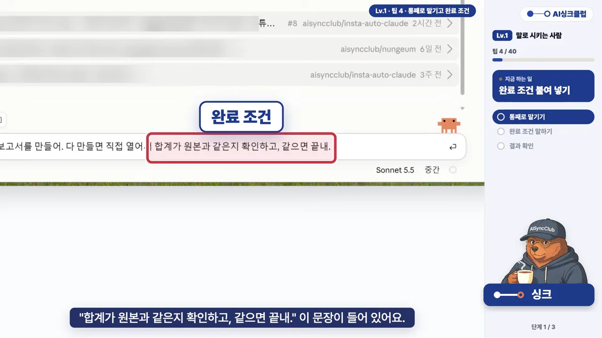
Matt Pocock 대담은 이걸 소통의 문제로 봐요. 모델이 아무리 똑똑해도 에이전트는 내가 무엇을 신경 쓰는지 몰라서 매번 알려 줘야 해요. 그런데 나도 내가 무엇을 원하는지 정확히 모를 때가 많아요. 그래서 Matt의 grill-me 스킬은 에이전트가 나를 집요하게 인터뷰하게 해요. 그러면 보안이나 배포 방식처럼 신경 써야 하는 줄도 몰랐던 것이 드러나요. 이걸 놓치면 에이전트는 지어내거나 '언급이 없으니 중요하지 않다'고 넘겨요.
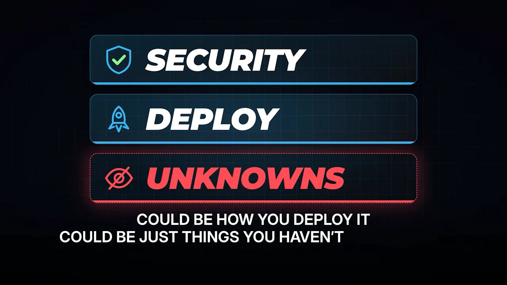
왕초보 가이드도 할 말이 정리되지 않으면 클로드에게 인터뷰를 시키라고 해요. 객관식 카드로 묻고, 끝나면 내 답과 클로드의 짐작을 나눠 정리하게 해요. 프롬프트 초안도 클로드에게 쓰게 하고 내가 손봐요.
초격차 사고법이 인용한 애디 오스마니의 글도 같은 순서를 권해요. 도움을 청하기 전에 요청서를 내 말로 먼저 써요. 누구를 위한 작업인지, 이번에 뺄 것은 무엇인지, 어디까지 하면 완료인지를 적어요. 스스로도 흐릿하면 AI가 나를 인터뷰하게 해요. 의도만큼은 누구도 대신 정해 줄 수 없으니까요.
인터뷰 중에 답을 모르겠을 때가 갈림길이에요. 발표자는 '알아서 해 줘'가 판단까지 넘기는 말이라고 해요. 그럴 땐 '모르겠다, 선택지를 줘'라고 답해요.

강조 대신 이유
"잘 생각해", "다시 확인해", "절대 하지 마" 같은 강조 문구는 요즘 모델을 느리게 해요(왕초보 가이드). 예전 AI에는 먹혔지만 요즘 모델은 안 시켜도 생각하고 확인하니, 거기에 더 붙이면 느려지기만 해요. 대신 "임원 보고라 한 장이어야 해"처럼 이유를 말해요.
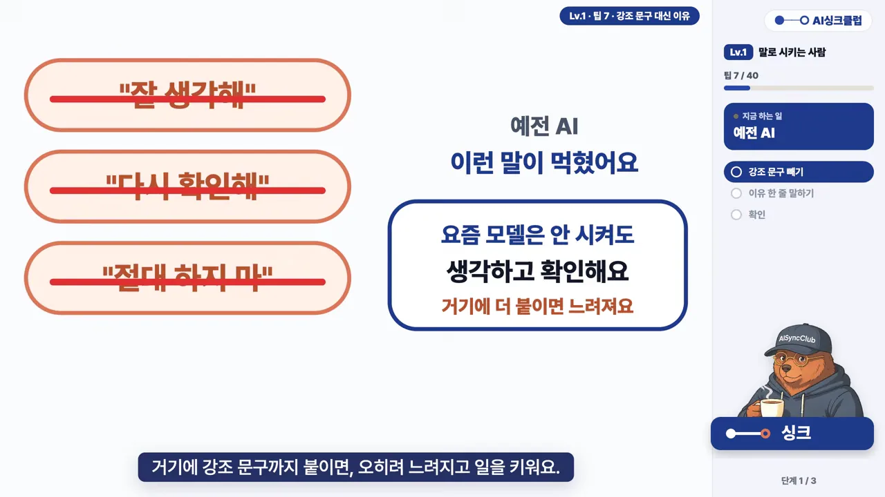
원치 않는 행동은 그 행동을 짚어 막아요
Fable 5.1 가이드는 에이전트가 이상하게 굴 때 모델을 바꾸기 전에 그 행동을 정확히 짚어 막는 한 문장부터 찾으라고 해요. 영상이 보여 준 문장들이에요.
| 이런 행동이 보이면 | 넣는 문장 |
|---|---|
| 로그인 오류를 고쳐 달랬는데 관련 없는 화면까지 바꿔요 | "요청과 관련 없는 문제를 발견하면 수정하지 말고 작업이 끝난 뒤 알려줘" |
| 확인용으로 잠깐 만든 코드를 전부 테스트 파일로 남겨요 | 요청했거나 프로젝트가 같은 종류의 테스트를 관리할 때만, 기존 방식대로 필요한 만큼 추가하라고 적어요 |
| 한두 줄만 고치면 되는데 파일 전체를 다시 써요 | 결과가 같을 땐 필요한 부분만 고치라고 시스템 프롬프트나 첫 메시지에 적어요 |
| "진행할까요?" 하고 묻거나 다음으로 미루며 멈춰요 | "나는 작업 중에 답할 수 없어. 이미 요청한 일은 다시 묻지 말고 진행해. 물어볼 게 있으면 처음에 한 번에 물어봐 줘." |
| 일부가 막히면 전체를 멈춰요 | "요청한 작업은 끝까지 완료해 줘. 일부가 막혀도 나머지는 다 마치고, 못 한 부분은 이유를 따로 알려줘." |
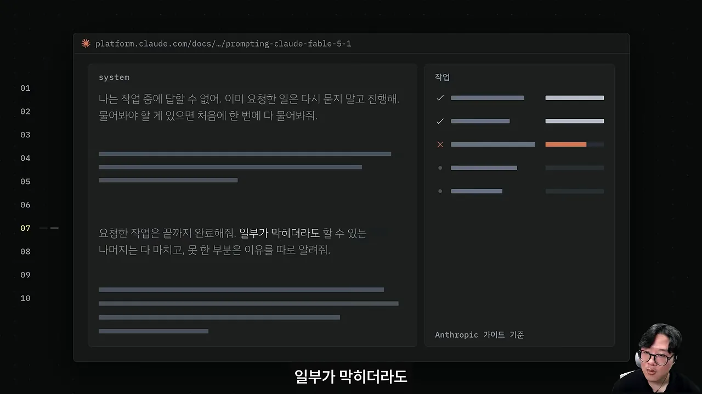
예외도 함께 적어요. 되돌리기 어려운 삭제나 범위를 바꾸는 일은 먼저 묻게 하고, 의견만 물었을 때는 고치지 말고 설명만 하게 해요. 프롬프트가 길다면 첫 번째 지침('다시 묻지 말고 진행')부터 넣으라고 해요.
아무도 내리지 않은 결정에서 멈추게
9 Skills는 반대 방향의 장치를 보여 줘요. AI에게 설계를 맡기면 데이터베이스 구조나 핵심 로직 같은 결정을 묻지 않고 '돌아가게 하는 것'으로 골라 코드 속에 묻어 버려요. 그러면 사람은 결정을 내린 게 아니라 물려받게 돼요. 그래서 architect 스킬은 결정마다 추천안과 진 대안, 진 이유를 문서에 적어서 사람이 보고 뒤집을 수 있게 해요.
핵심은 '값의 출처'예요. 기능이 보여 주거나 계산해야 하는 값(합계, 날짜, 상태)마다 어디서 오는지 적어요. 출처가 없는 값은 아무도 내리지 않은 결정이에요. develop 스킬은 구현 직전에 이 목록을 기계적으로 다시 확인하고, 출처 없는 값이 있으면 멈춰서 사람에게 결정을 돌려보내요.
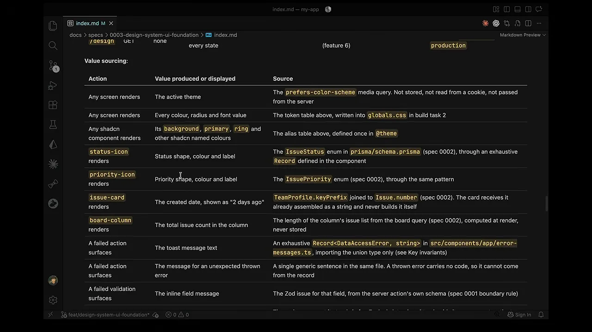
영상은 이 방식도 100%는 아니라고 인정해요. 그래도 거의 다 잡는 것과 전부 조용히 넘어가는 건 완전히 다르다고 해요. AI는 진짜 결정을 '그냥 배선'이라고 스스로 납득하고 넘어가기 쉬워서, 느낌이 아니라 목록으로 확인하는 거예요.
초격차 사고법은 같은 문제를 기능이 아니라 의도 쪽에서 막아요. 예전엔 모호한 요청을 하면 동료가 이의를 제기해 줬어요. 에이전트는 대개 나를 멈춰 세우지 않고, 빠진 부분을 임의로 채워 완성된 듯한 결과를 가져와요. 내가 말하지 않은 부분은 전부 클로드 코드가 대신 정한 거예요. 그래서 누가 이 기능을 왜 넣었냐고 물으면 답을 못 해요.
해법은 의도를 파일로 적어 두고, 어긋나는 요청이 오면 클로드 코드가 멈추고 되묻게 하는 거예요. 적는 건 셋이에요. 이 서비스로 달성하려는 것(미션), 절대 하지 않을 것, 결정할 때 쓰는 판단 기준(철학)이에요. 셋 다 코드와 상관없이 이미 머릿속에 있는 내용이에요. 알려 주지 않으면 클로드 코드는 남들이 흔히 따르는 목표를 우리도 가졌다고 짐작하고 일해요.

mission.md에, '입력은 30초 안에' 같은 원칙은 philosophy.md에 걸려요. 초격차 사고법 06:44에서 보기발표자의 예제는 구독 관리 서비스예요. 기획 단계에서 '절약 추천' 기능은 만들지 않기로 정해 뒀어요. 일부러 "절약 추천 기능 만들어 줘" 한 줄을 보내면, 클로드 코드가 코드를 쓰기 전에 미션·철학·목표 파일부터 읽어요. 그리고 '안 할 것' 목록 2번과 겹친다고 짚고 선택지 셋을 내요. 만들지 않기(추천), 사실만 보여 주는 기능으로 바꾸는 절충안, 정말 필요하면 미션부터 고치기예요.
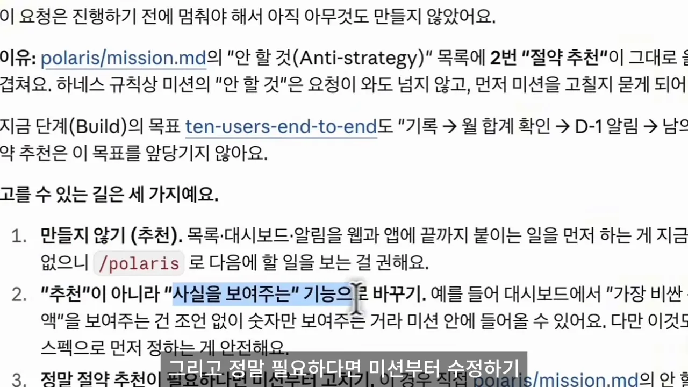
'안 할 것'처럼 분명한 경우만 걸리는 건 아니에요. "카테고리를 필수로 입력하게 해 줘"라고 하면, 필수 칸이 늘어 '입력은 30초 안에 끝난다'는 원칙이 깨진다며 원칙대로 갈지, 원칙을 고칠지, 절충할지 먼저 물어요. 진짜 효과는 내가 못 본 결정에 있어요. 클로드 코드는 작업 중에 작은 결정을 수없이 내리는데, 미션과 원칙이 적혀 있으면 그 결정까지 내 기준을 따라요. 판단을 미루는 게 아니라 미리 내려 두는 셈이에요.
훅으로 같은 실수를 막아요
CLAUDE.md에 적은 규칙은 부탁이라 가끔 빠져요(3절). 꼭 지켜야 할 규칙은 훅으로 옮겨요. 왕초보 가이드는 훅을 사람이 지나가면 켜지는 센서등에 빗대요. 명령을 실행하기 전이나 작업이 끝났을 때처럼 정해진 순간에 저절로 도는 규칙이에요. 홀먼 영상의 슬라이드 제목대로, 훅은 그냥 셸 스크립트예요. settings.json에 언제(PreToolUse, PostToolUse, UserPromptSubmit, Stop) 무엇을 돌릴지 적어요.
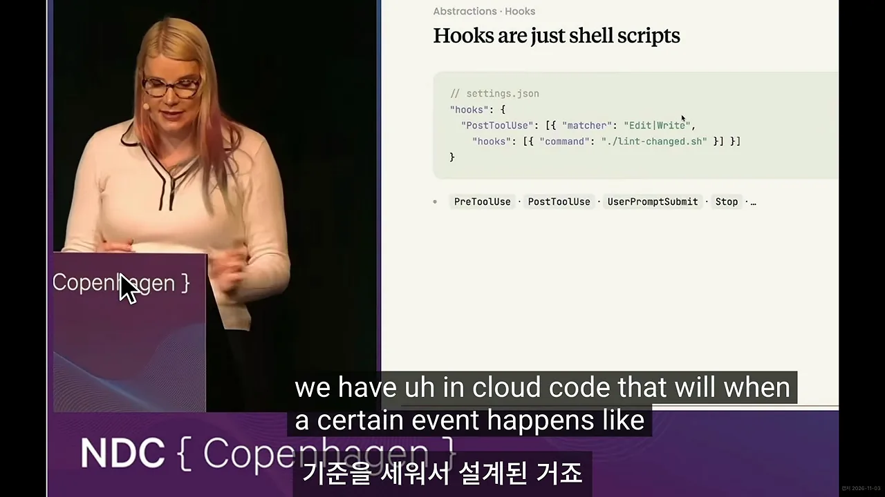
PostToolUse, Edit|Write)마다 바뀐 곳을 린트하는 스크립트를 거는 예예요. 관련 없는 순간에는 컨텍스트에 아무것도 넣지 않아요. 홀먼 영상 02:25에서 보기실수한 그 순간의 빨간 밑줄
홀먼은 훅을 '에이전트를 위한 빨간 물결선'이라고 불러요. 문서 편집기에서 맞춤법이 틀리면 바로 밑줄이 생기듯, 규칙을 어긴 바로 그 순간에 알려 줘요. 슬라이드 예시에서는 에이전트가 없는 변수 backoffMs를 쓰자, 파일을 고친 직후 도는 훅이 '그 이름을 못 찾았다, config.backoffMs를 말한 거냐'는 경고를 컨텍스트에 바로 넣어 줘요.

되돌릴 수 없는 일은 실행 직전에 막아요
발표자는 비밀 키 노출이나 복구할 수 없는 삭제를 훅으로 실행 직전에 막아요. 화면 예시에서는 클로드 코드가 시크릿 키 값을 코드 파일에 직접 쓰려다 PreToolUse 훅에 막혀요. 클로드 코드는 우회하지 않고 '.env에 두고 서버에서 읽으라'는 안내를 따르겠다고 답해요. 같은 장치를 만들려면 클로드 코드에게 "훅으로 위험한 작업 실행 직전에 막는 장치를 설계해 줘"라고 부탁하면 된대요.

왕초보 가이드의 발표자도 훅 두 개를 만들었어요. 위험한 삭제 막기와 작업 끝 알림이에요. 삭제 훅은 rm -rf, git reset --hard, git push --force 같은 명령을 실행 전에 막아요.
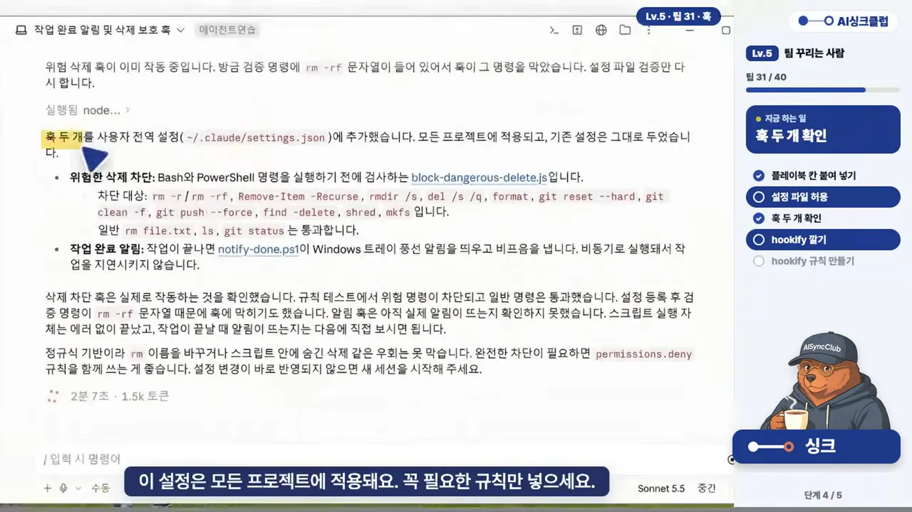
하네스 엔지니어링: 같은 실수를 환경으로 막기
공식 플러그인 4개는 Hookify를 하네스 엔지니어링과 묶어 설명해요. Mitchell Hashimoto는 하네스 엔지니어링을 "에이전트가 실수할 때마다 그 실수가 다시는 일어나지 않도록 엔지니어링하는 것"이라고 했어요. AI를 탓하지 말고 환경을 고치라는 뜻이에요.
토큰 면에서도 이득이에요. 클로드가 잘못 쓰면 우리가 "왜 그렇게 했어?"라고 지적하고, 클로드가 사과하고 정리한 뒤 다시 시도해요. 발표자는 이 한 사이클에 수천 토큰이 사라진다고 추정해요. 훅은 이 사이클이 시작되기 전에 끊어요.
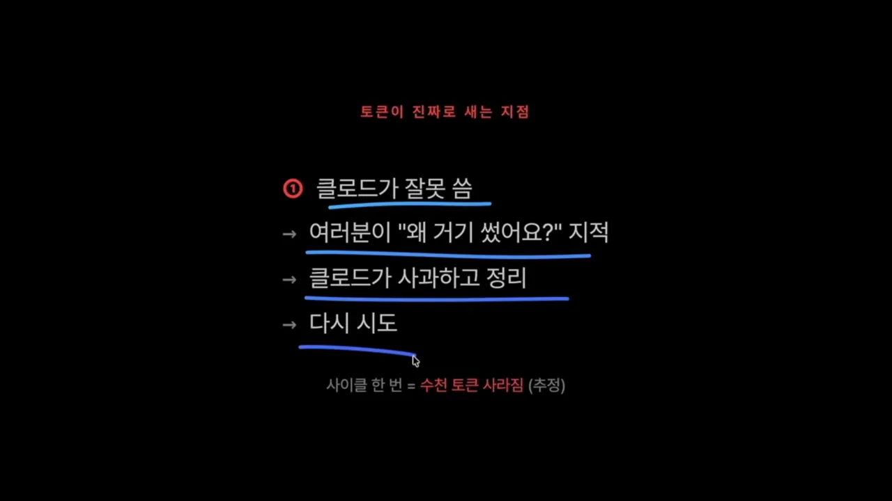
Hookify는 규칙을 말로 만들게 해 줘요. 데모에서는 /hookify 프로덕션 코드에 console.log 쓰지 마라고 입력하고 질문 몇 개에 답하면, .claude/ 아래에 마크다운 규칙 파일이 생겨요. 앞부분(프론트매터)에는 언제 발동할지 조건이, 본문에는 클로드가 지킬 지침이 들어 있어요.
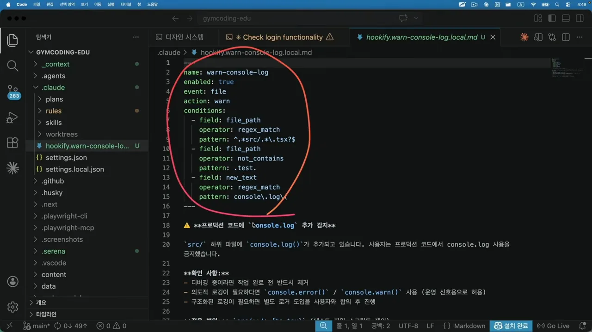
src/의 TypeScript 파일이고, 테스트 파일이 아니고, 새로 쓴 글에 console.log(가 있을 때만 경고해요. 공식 플러그인 4개 13:34에서 보기발표자의 팁은 같은 실수를 세 번 겪었다 싶으면 인자 없이 /hookify를 한 번 돌려 보라는 거예요. 최근 대화에서 짜증 났던 패턴을 자동으로 뽑아 규칙 후보로 만들어 줘요.
훅으로 '완료' 표시를 막기
리뷰 루프는 훅을 검증에 써요. 기능마다 통과 기준(eval)을 먼저 써 두고, eval이 통과하기 전에는 작업을 끝났다고 표시하지 못하게 훅으로 막아요. 처음 쓰는 사람처럼 앱을 써 보는 검사 에이전트가 앱 코드를 읽지 못하게 막는 것도 훅이에요. 둘 다 9절에서 자세히 봐요.
서브에이전트와 루프는 언제 쓸까요
서브에이전트는 별도의 컨텍스트 윈도우에서 일하고 결과만 요약해 돌려줘요(3절). 홀먼 영상이 인용한 공식 문서는 검색 결과, 로그, 파일 내용처럼 과정에서 잔뜩 쌓이는 데이터가 메인 대화를 채울 때 쓰라고 해요. 그런데 이게 '에이전트를 많이 쓸수록 좋다'는 뜻은 아니에요. 이 절은 언제 나누고 언제 혼자 두는지를 모았어요.

역할별 에이전트 팀은 대부분 손해였어요
멀티 에이전트 실험은 감독·개발자·기획자처럼 업무별로 에이전트를 나누면 더 효율적이라는 말을 직접 시험했어요. 발표자가 먼저 꼽는 문제는 '전화 게임'이에요. 작은 일까지 역할을 쪼개면 에이전트끼리 정보를 주고받는 과정에서 내용이 조금씩 새어 나가 정확도가 떨어져요.
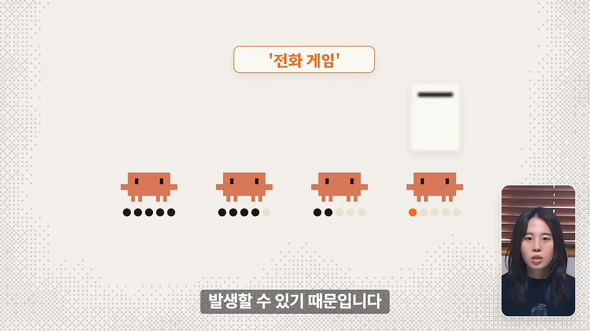
비교한 설정은 셋이에요. Claude 혼자 다 하는 단일, 계획부터 보안 리뷰까지 에이전트 다섯이 나눠 맡는 팀, 그리고 단일 세션에 코드 리뷰 한 번만 별도 에이전트에게 맡기는 단일+리뷰어예요. 미니 칸반보드 과제에서는 셋 다 인수 테스트 47개를 모두 통과했는데, 작업 시간은 6.0분, 39.6분, 7.3분이었어요. 팀이 일곱 배 가까이 오래 걸렸어요.
실제로 운영하는 서버의 2주치 작업 14개를 다시 구현하게 한 실전 과제에서도 결과는 비슷했어요.
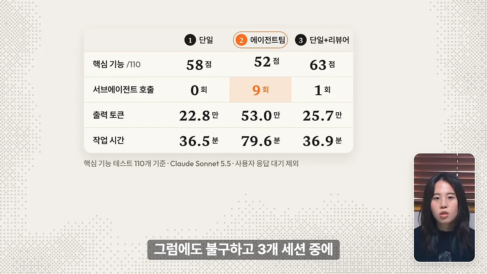
모델을 Opus 5.5로 올려도 같았어요. 단독은 42.8분에 64점, 팀은 63.6분에 62점이었어요. 눈에 띄는 건 단독 Opus가 시키지 않았는데도 계획 단계에서 탐색 에이전트(Explore) 세 개를 불러 코드를 나눠 읽었다는 점이에요.
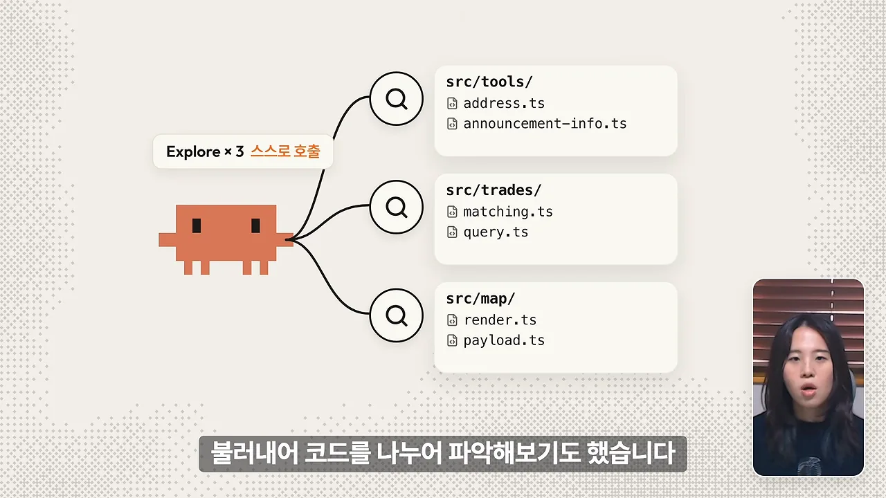
발표자의 결론은 '얼마나 많이가 아니라 언제'예요.
- 에이전트를 쓸 때: 구현이 끝난 뒤의 독립 코드 리뷰, 넓은 코드베이스를 먼저 조사할 때, 독립된 기능을 각자 만들거나 여러 관점의 리뷰를 동시에 돌리는 병렬 작업. 다만 에이전트 수만큼 토큰도 늘어요.
- 단일 Claude가 나을 때: 계획·구현·테스트가 한 맥락으로 이어지는 작업, 작고 빠른 수정, 대화하며 주고받으며 다듬는 작업.
펠릭스 인터뷰도 같은 쪽이에요. 펠릭스의 '매운 의견'은 우리가 에이전트라는 개념에 너무 기울어 있다는 거예요. 역할을 붙이는 건 사람이 이해하기 쉬워서일 뿐, 범용 모델 하나가 이미 만능에 가깝다고 봐요. 데이터도 에이전트마다 조각내 주지 말고, 전체를 도구로 열어 주고 도구 뒤에 어떤 데이터가 있는지 잘 문서화하라고 해요.
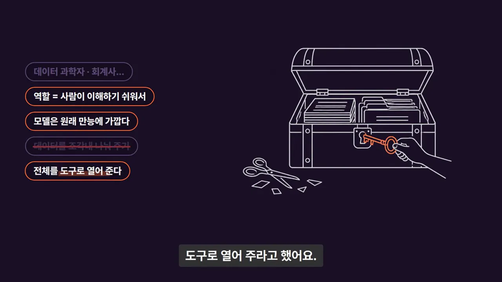
넘길 때는 지시서, 돌려받을 때는 정해진 보고
게임 팀 세팅은 이미지가 필요한 일을 Claude가 Codex에게 넘겨요. 넘기는 방식이 정해져 있어요. Claude가 쓰는 작업 지시서에는 먼저 읽을 것, 목표(사용자 말 그대로), 고쳐도 되는 범위, 하면 안 되는 일이 들어가요.

Codex는 일을 끝내면 통과(PASS)·실패(FAIL)·못 돌림(NOT_RUN) 셋 중 하나로 보고해요. 검사를 못 돌렸는데 통과라고 쓰면 안 되니까요. Claude는 그 보고를 그대로 믿지 않아요. 실제로 바뀐 파일을 보고서와 맞춰 보고, Codex가 돌렸다는 검사를 자기가 다시 돌리고, 렌더한 이미지도 직접 열어 봐요. 다 맞을 때만 커밋해요.
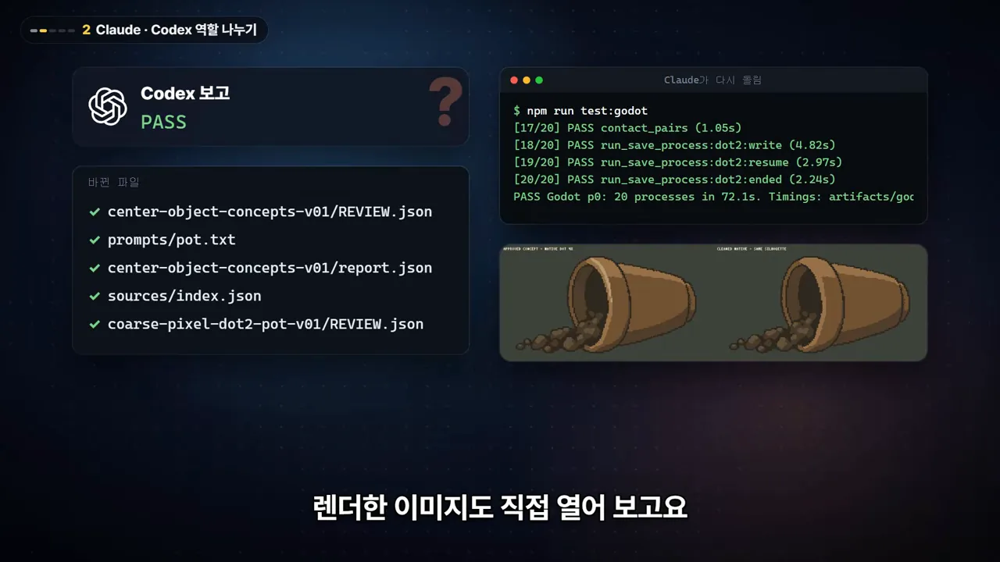
PASS 옆의 물음표가 이 팀의 태도예요. 받은 쪽이 검사를 다시 돌려 확인한 뒤에야 믿어요. 게임 팀 세팅 02:50에서 보기Fable 5.1 가이드는 넘긴 뒤의 행동을 짚어요. 서브에이전트에게 일을 넘겼다면 메인이 기다리지 말고 다음 일을 계속하게 해요. 품질과 비용은 비슷한데 평균 완료 시간이 줄어든대요. 메인 컨텍스트를 아끼려고 기다리게 하던 예전 방식과 반대라서, 11절 표에도 올렸어요.
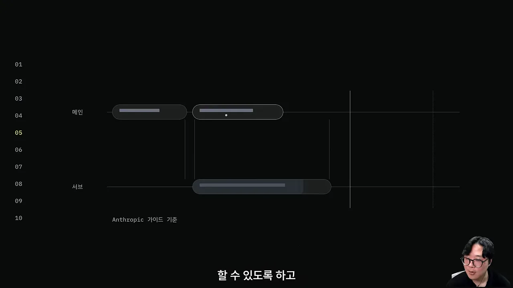
서브에이전트에는 모델을 따로 정해요
모델 고르기 기준은 서브에이전트를 비용 쪽에서 봐요. 서브에이전트는 자기 컨텍스트 창에서 일하고 요약만 돌려주는데, 비용은 그 서브에이전트가 쓰는 모델의 단가로 나가요. 그래서 정의 파일에 model: haiku 한 줄을 넣으면 그 일은 Haiku 값으로 돌아요. 영상이 소개한 Anthropic 블로그 예시는 테스트 로그를 읽고 실패한 케이스마다 파일, 테스트 이름, 첫 에러 줄만 보고하는 log-reader예요. 파일은 고치지 못하게 하고요.
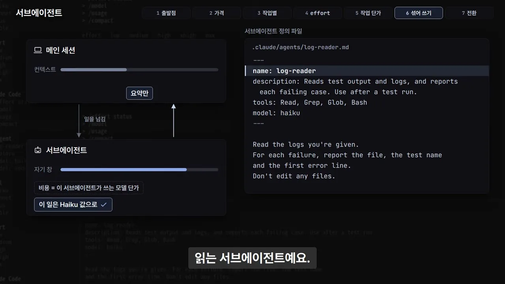
model: haiku예요. 이 한 줄로 이 일의 단가가 Haiku로 내려가요. 모델 고르기 기준 05:04에서 보기조건이 하나 붙어요. 작은 모델에는 실수해도 금방 알아챌 수 있는 일, 즉 파일 찾기, 테스트 돌리기, 로그 읽기만 줘요. 코드 수정과 판단은 메인 모델에 남겨요. 작은 모델이 검색 결과를 잘못 읽으면 메인 모델이 엉뚱한 파일을 열어 토큰을 쓰게 되거든요. 앞의 지시서·보고 형식처럼, 넘기는 일의 범위를 좁게 잡는 게 핵심이에요.

기본 탐색 에이전트도 다시 봐야 해요. 최신 Claude Code의 기본 Explore 서브에이전트는 늘 Haiku로 도는 게 아니라 지금 세션의 모델로 돌아요. 위 멀티 에이전트 실험에서 단독 Opus가 스스로 부른 Explore 세 개도 그렇다면 Opus 값으로 돌았다는 뜻이에요. 탐색을 싸게 하려면 이름이 Explore인 서브에이전트를 직접 만들고 model: haiku를 넣어요.
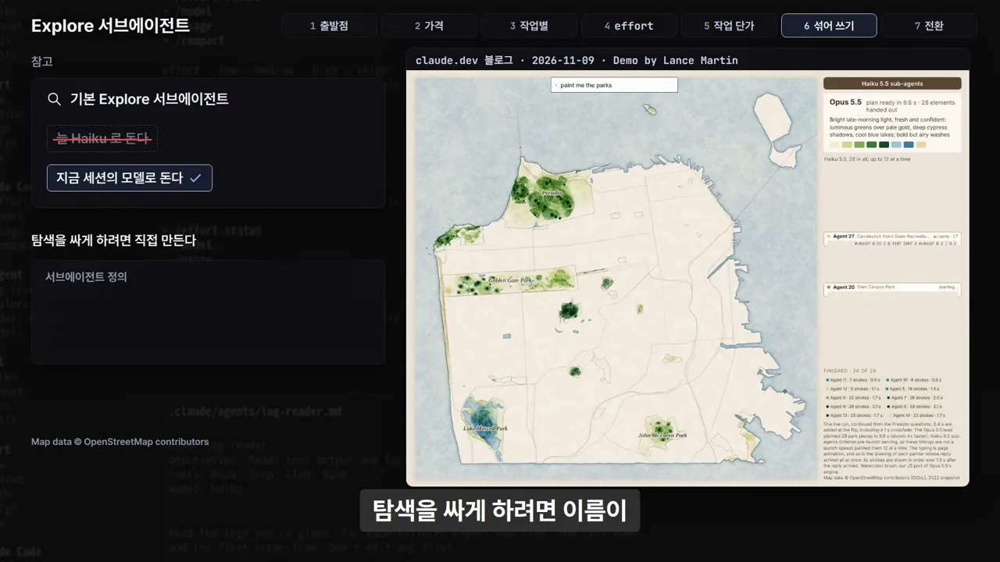
일이 한 컨텍스트에 안 들어갈 만큼 크면 큰 모델이 리드를 맡아 일을 쪼개고, 싼 워커 여럿에게 동시에 나눠 준 뒤 결과를 합쳐요. 소스 코드 약 2,200만 토큰에서 결함을 찾는 Anthropic 내부 벤치마크에서, Opus 5.5 리드 아래 Sonnet 5.5 워커를 한 번에 최대 25개 붙였더니 Opus 혼자 기본 effort로 돌릴 때보다 비용이 약 1/3 적었고 점수는 거의 같았어요. 역할별 팀은 손해였다는 멀티 에이전트 실험과 달리, 이건 같은 일을 조각으로 나눈 경우예요.

정해진 일은 에이전트 대신 루프로
263배 실험이 비용을 가장 크게 줄인 건 에이전트를 더 쓴 게 아니라 루프였어요. 파이썬이 검사와 기억을 맡고, 모델에게는 짧은 요청을 한 번 보내요. 떨어진 것만 이유와 함께 새 호출로 다시 보내고, 앞 대화를 이어 붙이지 않아요. 무엇이 끝났고 무엇이 남았는지는 대화가 아니라 파일과 코드가 기억해요.
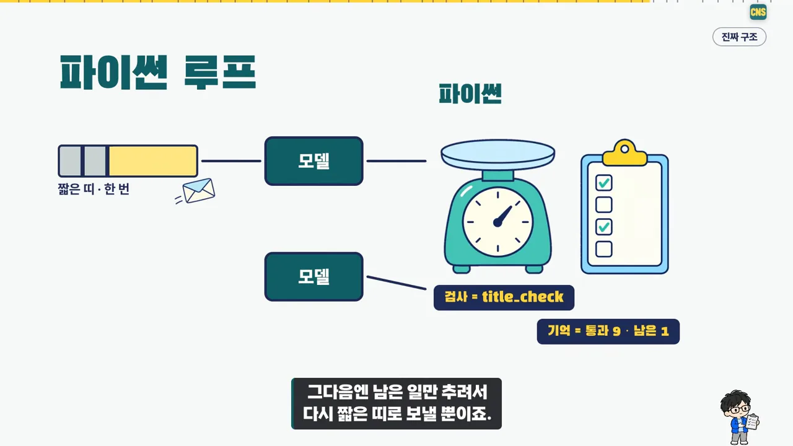
발표자의 템플릿은 네 가지로 이뤄져요. 통과 기준을 check 함수에 코드로 적고, 일꾼은 도구를 끄고 한 줄 시스템 프롬프트로 맨몸으로 부르고, 모델은 Haiku부터 시작해 통과율이 낮으면 한 단계씩 올리고, 떨어진 것만 새 호출에 넣어요. 다만 모든 일을 루프로 바꿀 수는 없어요. 무엇을 할지부터 찾아야 하거나 파일 여러 곳을 뒤져야 하는 일은 에이전트에게 맡기는 게 맞아요.
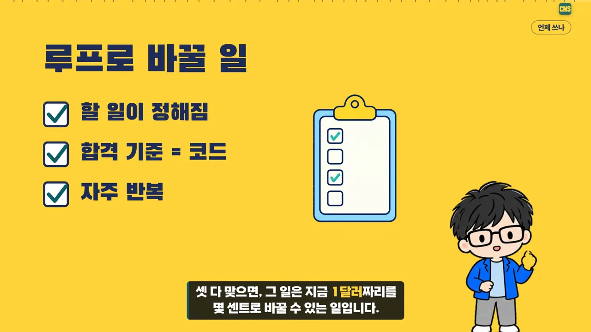
팩토리 v2는 에이전트와 스크립트가 일을 나누는 방식을 통째로 보여 줘요. GitHub 이슈에 factory 라벨만 붙이면 Claude Code 에이전트들이 받아서 PR까지 만들어 주는 '소프트웨어 팩토리'예요. Claude Code 세션 하나에서 /factory run을 치면 그 세션이 오케스트레이터가 되고, 일마다 백그라운드 서브에이전트를 띄워요. 흐름은 접수(Fable) → 스펙 작성(Opus) → 빌드(Opus) → 게이트(checks.sh) → 리뷰어들 → 승인자(Opus)예요. 게이트나 리뷰에서 떨어지면 같은 빌더에게 되돌아가요.

v2에서 가장 달라진 점은 정확해야 하는 일을 에이전트가 아니라 셸 스크립트가 맡는다는 거예요. 영상은 이걸 '결정론적 뼈대'라고 불러요. 게이트는 lint, typecheck, test, build를 돌리는 bash 파일 checks.sh라서 싸고 확실해요. 리뷰어보다 먼저 돌고, 여기서 떨어지면 리뷰어까지 가지도 않아요. 작업 상태는 작업마다 하나씩 있는 job.json에 담기는데, 이 파일은 factory/bin/job 스크립트만 써요. Claude는 파일을 직접 고치지 않고 스크립트 함수(queue, create, advance, merge, feedback…)를 불러요. 리뷰 없이 머지하는 식의 잘못된 이동은 스크립트가 거부해요.

상태가 대화가 아니라 파일에 있으니 세션이 죽어도 이어 가요. 오케스트레이터에서 Ctrl+C를 누르면 백그라운드 에이전트가 전부 멈추지만, /factory run을 다시 치면 GitHub와 대기열을 보고 모든 작업을 되살려요. 다만 돌던 단계는 처음부터 다시 해요. 접수 단계는 판단 이유도 intake.md에 남겨요. 발표자는 에이전트가 왜 그렇게 판단했는지 남겨 두는 게 디버깅과 팩토리 개선에 중요하다고 해요. 263배 실험의 루프가 검사와 기억을 파이썬에 맡긴 것처럼, 판단은 에이전트에게 주고 상태와 검사는 스크립트에 맡겨요. 발표자도 1편보다 쓸 만해졌지만 더 복잡해졌고, 바로 프로덕션에 붙일 물건은 아니라고 정리해요.
게임 팀 세팅은 루프의 값을 경고해요. Anthropic의 실험에서 모델 혼자 한 번 만들면 20분에 9달러였는데, 만들고·검사하고·다시 만드는 루프로 돌리니 6시간에 200달러가 들었어요. 게다가 어느 정도 돌면 점수가 더 안 오르는 지점이 와요. 그래서 이 팀은 코드처럼 테스트로 충분한 일에는 루프를 잘 안 돌리고, 그림처럼 정답이 없는 작업에만 써요. 회차 상한을 두고, 점수가 더 안 오르기 시작하면 사람에게 돌아오게 해 놨어요.
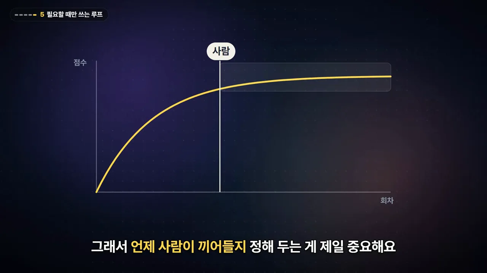
하네스를 고치는 루프에는 원본 로그를
Meta-Harness 해설은 루프를 한 층 위로 올려요. 스탠퍼드, MIT(Massachusetts Institute of Technology), 크래프톤 연구진의 Meta-Harness는 에이전트가 자기 하네스 코드를 다시 쓰는 오프라인 루프예요. 실행 중에 끼어들지 않고, 평가, 기록, 탐색, 개선 네 단계를 따로 돌아요.
요점은 무엇을 건네느냐예요. 코드가 10단계 중 어디선가 망가졌는데 '최종 점수 41.3' 하나만 받으면, 1단계 검색이 틀렸는지 마지막 단계가 꼬였는지 알 길이 없어요. 그래서 이 루프는 모든 후보의 코드, 점수, 날것의 실행 로그를 파일로 두고, 제안자 에이전트가 grep과 cat으로 직접 찾아 읽게 해요. 그 양을 프롬프트 하나에 넣을 수는 없으니, 영상의 비유로는 도서관을 외우게 하지 말고 출입증을 주는 거예요. 제안자가 실제로 연 파일은 소스 코드 41%, 실행 로그 40%, 점수 요약 6%였어요.
제안자에게 주는 정보만 바꾼 절제 실험이 이걸 숫자로 보여 줘요. 위 두 줄은 점수만, 점수에 LLM 요약을 더한 경우이고, 맨 아래 줄이 원본 로그를 준 경우예요.
로그를 읽은 제안자가 찾은 개선도 그런 종류예요. TerminalBench-2에서 에이전트가 매번 실행 환경을 확인하느라 턴을 낭비한다는 걸 로그에서 알아채고, 처음에 환경을 한 번에 점검하는 80줄짜리 코드를 넣었어요. 점수만 봐서는 찾기 어려운 개선이에요. 앞의 루프가 기억을 대화가 아니라 파일에 둔 것처럼, 여기서도 판단 재료는 파일에 원본 그대로 남겨요.
'다 됐어요'를 믿지 않는 법
에이전트는 일을 끝냈다고 말하지만, 실제로 써 보면 빠진 게 많아요. 리뷰 루프는 그래서 가장 중요한 일이 "정말 했는지"를 확인하는 거라고 말해요. 이 절은 여러 영상이 그 확인을 어떻게 짜는지 모았어요. 공통점은 셋이에요. 완료 기준을 먼저 정하고, 만든 세션 바깥에서 채점하고, 멈출 지점을 미리 정해요.
메타 Eval 세미나는 이 확인이 왜 지금 병목인지 숫자로 보여 줘요. Faros AI가 개발자 2만 2천 명의 2년치 작업 기록을 보니, 같은 조직에서 AI를 많이 쓸수록 PR 크기는 51% 커지고 리뷰 시간(중앙값)은 약 5배, 리뷰 없이 머지된 PR은 31% 늘었어요. 코드 쓰기는 싸졌는데 확인은 여전히 비싸서, 검수 라인에 PR이 쌓인 셈이에요.
초격차 사고법은 같은 병목을 사람 쪽에서 봐요. 애디 오스마니는 AI를 쓰는 상태를 검토를 얼마나 하느냐로 셋으로 나눠요. 결과를 전부 검토하고 책임도 지는 인지적 위임, 확인도 안 한 결과 위에 다음 요청을 쌓는 판단의 연기, 검토할 수조차 없어 AI 답을 그대로 받는 판단의 포기예요. 포기는 서서히 와요. 처음엔 꼼꼼히 읽다가 내용이 복잡해지면 조금씩 손을 놓아요. 클로드 코드의 도움을 받아서라도 내 작업의 의도를 설명할 수 없다면 포기한 거예요. 모델이 좋아질수록 눈에 띄는 오류가 줄어서 다시 볼 이유가 사라진다는 경고도 해요. 그래서 이 절의 확인 장치를 느낌이 아니라 시스템으로 고정해 둬요.

완료 기준부터 정해요
리뷰 루프가 소개한 Claude Code 팀의 방식은 리뷰의 질문부터 바꿔요. "누가 코드를 읽었나?" 대신 "이 변경으로 무엇이 잘못될 수 있고, 그걸 어떻게 잡나?"를 물어요. 그리고 Claude에게 "됐다"는 말 대신 테스트 결과나 디자인과 비교한 스크린샷 같은 증거를 보여 달라고 해요. Claude Code를 만든 Boris Cherny도 Claude가 자기 작업을 검증할 방법을 주는 게 가장 중요하다고 했어요.
채널은 이걸 write-evals 스킬로 옮겼어요. 기능마다 통과·실패가 분명한 검사(eval)를 먼저 쓰고, 사람이 승인하기 전에는 아무것도 만들지 않아요. eval이 통과하기 전에는 작업을 끝났다고 표시하지 못하게 훅으로 막아요(7절).
초격차 사고법이 인용한 애디 오스마니의 기준도 같아요. 완료는 '다 된 것 같다'는 느낌이 아니라 통과한 테스트나 실제 화면 스크린샷처럼 눈으로 확인할 수 있는 증거로 판정해요. 그리고 기준은 작업 전에 정해요. 끝난 뒤에 정하면 어떤 결과든 합리화하게 되거든요.

코드를 못 읽으면 어떻게 검토하냐는 질문에 영상은 검토 대상을 바꾸라고 답해요. 애디의 글에 따르면 클로드 코드 팀도 코드 전체를 머리에 넣고 일하지 않고, 필요한 부분만 그때그때 클로드에게 설명하게 해요. 발표자도 코드를 한 줄씩 읽는 대신 완료 기준을 검토해요. 발표자의 스펙에는 '완료 기준: 남이 확인할 수 있는 검사 하나' 칸이 있어요. 구현이 끝나면 클로드 코드가 브라우저를 열어 화면을 직접 눌러 보고, 테스트 98개를 다 통과한 뒤에야 저장하고 보고해요.

바로 해 볼 것도 하나 줘요. 완료 보고를 받으면 요약 대신 실제 실행 결과를 보여 달라고 해요.
세 스킬 묶음 비교도 공통으로 가져갈 점을 하나로 꼽아요. 완료를 어떤 결과로 확인할지 처음부터 함께 정해 두는 거예요. 세 묶음 모두 테스트를 하니 '테스트가 있다'는 고르는 기준이 못 되고, 무엇을 어떻게 확인하게 하는지를 봐야 한대요.
방금 일한 세션은 자기 판사로 서툴러요
펠릭스 인터뷰의 말로는 펠릭스가 못 믿는 건 클로드가 아니라 세션 하나예요. 방금 일한 세션은 자기 결과의 판사로 서툴러요. 그래서 실제로 무엇이 통하는지 보여 주는 바깥 증거를 찾고, 급하면 다른 세션이라도 써요. 리뷰 루프도 같은 이유를 대요. 기능을 만든 에이전트는 모든 결정을 직접 내렸기 때문에 리뷰를 맡기면 자기 생각에 동의해 버려요. 게임 팀 세팅의 그림 루프에서도 그린 AI는 자기 그림에 점수가 후해서, 처음 보는 AI에게 기준표와 기준 그림만 주고 채점을 맡겨요.
모르는 분야라면 펠릭스는 한 단계 더 가요. 결과물을 만든 클로드와 따로, 그걸 깨는 게 유일한 임무인 클로드를 여러 개 띄워요. 펠릭스는 이걸 적대적 리뷰라고 불러요. 흠을 찾는 건 새로 만드는 것보다 쉬워서 한 단계 낮은 모델을 써도 꽤 잘 된대요. 비판이 쏟아지면 판사 클로드가 타당한 것만 걸러 원래 만든 클로드에게 돌려주고, 그 클로드도 받아들일지 스스로 판단해요.
다른 눈을 어디서 얻을지는 영상마다 달라요. 애디 오스마니는 새 맥락의 검토자가 중요한 판단을 다시 의심하게 하고, pstack은 아예 다른 모델(Claude와 Grok처럼)에게 같은 변경을 따로 검토시켜 여러 모델이 함께 짚은 문제를 더 강한 신호로 봐요(세 스킬 묶음 비교, 코딩 스킬 7개 비교). 9 Skills도 코드를 쓴 모델과 다른 모델로 diff를 읽혀요. 같은 모델은 같은 맹점을 갖고 있어서예요.
리뷰 기준은 review.md에
리뷰어가 무엇을 중요하게 볼지는 review.md에 적어요. 이 앱에서 무엇이 진짜 실패이고 얼마나 심각한지, 무시할 것, 리뷰를 어떻게 보고할지, 앱을 어떤 방법으로 테스트할지예요. 이 파일은 따로 시키지 않으면 읽히지 않아서, CLAUDE.md에서 @review.md로 링크해 새 세션마다 같이 불러오게 해요(4절). 그러면 /code-review도 그 기준을 따라요.
리뷰 루프가 멈추게 하는 규칙
빌더와 리뷰어는 언제 멈춰야 할지 몰라요. 리뷰 루프에 따르면 Claude Code 팀에서는 한 변경이 50번 넘게 오간 적도 있었고, 리뷰어가 계속 보고한 것의 약 59%는 첫 라운드부터 있던 문제였어요. 새 버그를 찾는 게 아니라 옛 문제를 하나씩 다시 찾고 있었던 거예요.
채널의 review-loop 스킬은 매 라운드 새 컨텍스트의 서브에이전트를 띄워서, 메인 에이전트와 같은 생각에 끌려가지 않게 해요. 메인 세션은 오케스트레이터로 루프를 돌리고 에이전트를 띄울 뿐, 앱 코드를 직접 쓰거나 판정하지 않아요. 빌더가 만들고, 검증자가 eval 항목마다 통과·실패와 증거를 남기고, 리뷰어가 review.md 기준으로 eval이 놓친 문제를 찾아요.
그래서 팀은 규칙을 세 개 더했어요.
- 세 라운드가 지나면 리뷰어는 문제를 더 늘어놓지 않고, 빌더에게 만드는 방식을 다시 생각하라고 해요.
- 첫 라운드 이후에는 마지막 수정이 바꾼 부분만 보고, 이미 보고한 건 다시 보고하지 않아요.
- 문제를 찾으면 종류를 말해요. 빌더가 그 한 곳만이 아니라 같은 종류를 전부 고쳐요.
이 뒤로 첫 리뷰에서 통과하는 변경이 늘었대요. 채널의 루프는 상한을 다섯 라운드로 두고, 같은 문제가 수정 두 번 뒤에도 남으면 그 전에 멈춰요. 게임 팀 세팅도 검토자 점수가 흔들리는 걸 봤어요. 같은 클로버 그림이 한 번은 통과, 한 번은 탈락이 나와서 검토자 둘의 평균을 써요. 그리고 기준을 다 통과한 회차보다 사람 눈에 더 좋은 회차가 있었어요.
위험할수록 세게 검사해요
모든 변경을 꼼꼼히 리뷰하면 시간과 사용량이 들어요. Claude Code 팀의 원칙은 "잘못됐을 때 피해가 클수록 더 세게 검사한다"예요. 직접 나눌 때는 "이 기능이 깨지면 고객에게 무슨 일이 생기나?" 하나만 물으면 돼요. 모양만 이상해지면 낮음, 기능이 안 되지만 잃는 건 없으면 중간, 돈을 잃거나 남의 데이터를 보게 되면 높음이에요(리뷰 루프). 9 Skills도 같아요. 버릴 프로토타입은 자체 확인만, 결제 시스템은 네 가지 검사를 매번 다 돌려요.
팩토리 v2는 이 나누기를 자동으로 해요. 이슈가 들어오면 맨 앞의 접수 단계(Fable)가 위험도(low·medium·high)와 영역(UI(User Interface)·보안)을 매기고, 그 결과로 스크립트가 리뷰어 수와 모델을 정해요. 쉬운 일엔 Haiku 코드 리뷰어 하나, 위험한 일엔 Sonnet과 보안 리뷰어가 붙어요. 데모에서도 Change display name(low)엔 보안 리뷰어가 없고, Colored sticky notes(medium)엔 있었어요. 발표자는 이걸 '동적 DAG'라고 불러요.
| 리뷰어 | 모델 | 언제 붙나요 |
|---|---|---|
| 코드 리뷰 | Haiku, 위험하면 Sonnet | 항상 |
| UX(User Experience) 리뷰 | Sonnet | UI 변경 |
| UI 디자인 리뷰 | Haiku | UI 변경 |
| 보안 리뷰 | Opus | 보안 관련 변경 |
사람이 어디서 직접 판단할지도 같은 잣대로 골라요. 초격차 사고법은 틀려도 대가가 작은 일은 통째로 맡기고, 무엇을 만들지나 배포해도 안전한지처럼 결과가 무거운 판단은 직접 하라고 해요. 팩토리 v2의 승인자(Opus)도 그냥 머지할지, 사람에게 넘길지(needs-human)를 골라요. 데모에서는 저장 데이터 형식을 되돌릴 수 없게 바꾸는 Multiple walls가 사람의 사인을 기다렸어요.
빌드 성공은 완료가 아니에요
테스트가 초록색이어도 AI가 떠올린 코드만 검사했을 뿐이에요(9 Skills). 세 스킬 묶음 비교의 정산 앱 예시는 화면에 "정산 완료"가 떠도 송금 요청 알림은 한 명에게도 안 갔을 수 있다고 보여 줘요. 그래서 pstack은 실제 실행 결과로 확인해요. 버그 수정이라면 재현, 로그로 원인 찾기, 수정, 같은 조건에서 재확인 순서로 가고, 실패하던 결과(0/4)와 통과한 결과(4/4)를 나란히 보여 줘요.
직접 써 보는 것도 한계가 있어요. 이미 동작을 알기 때문에 놓치는 게 있거든요. 리뷰 루프의 first-time-user 스킬은 앱이 만들어지는 걸 본 적 없는 새 에이전트를 띄워 처음 온 고객처럼 실제 앱을 쓰게 해요. 이 에이전트는 앱 코드를 읽지 못하게 막고, 터미널 명령으로 우회하는 것도 훅으로 막고, 테스트용 임시 데이터베이스를 써요. Matt Pocock 대담에서도 가장 큰 이득은 환경 개선에서 왔어요. 영상 편집기를 에이전트가 브라우저로 직접 눌러 보고 스크린샷을 찍게 바꾸자 결과물 품질이 크게 올랐대요.
CLAUDE.md도 빼고, 코드를 읽으려 하면 훅이 막아요. 리뷰 루프 14:15에서 보기스킬도 Eval로 채점해요
지금까지는 에이전트가 만든 결과를 확인했어요. 메타 Eval 세미나는 스킬과 지시문 자체도 같은 방식으로 확인하라고 해요. 스킬도 코드라서 테스트가 필요하다는 거예요. 발표자가 든 예는 에이전트가 올린 스킬 '정리' PR이에요. 'CLI가 이미 coverage를 찍으니 중복 규칙을 정리'라는 설명에 리뷰어가 승인하는데, 지운 줄은 '잘린 목록을 전부라고 말하지 마라'예요.

실제 사고도 있었어요. Anthropic이 2026년 4월 16일 Claude Code 시스템 프롬프트에 '도구 호출 사이 글은 25단어 이하'를 넣었어요. 내부 테스트와 eval에서는 회귀가 없었지만 출시 뒤 품질 불만이 나왔고, 더 넓은 eval 하나에서 Opus 4.6과 4.7 모두 3% 떨어져 4월 20일 되돌렸어요(11절). 리뷰는 글을 읽고, 유닛 테스트는 함수를 돌려요. 에이전트가 그 글대로 움직이는지 돌려 보는 게 Eval이에요.
Eval은 실행마다 달라지는 행동의 테스트라서 유닛 테스트와 짜는 법이 달라요. 같은 문제를 k번 풀리고(세미나는 k=3), 코드로 보는 하드 체크와 다른 모델이 보는 judge로 채점해요. 결과는 통과·실패가 아니라 점수, 통과율, 버전 사이 차이로 나와요. 비용은 토큰 × 케이스 × k라서 k가 크면 정확하지만 비싸요.
스킬 하나에 묻는 질문은 셋이에요. 불리나(routing, 스킬을 로드했나), 도움이 되나(uplift, 스킬 없음과 있음을 비교), 이 수정이 망가뜨렸나(regression, 옛 버전과 새 버전을 비교)예요. 품질이 같아도 더 빨리, 더 적은 토큰으로 낸다면 그것도 이득이에요.
채점은 두 겹이에요. 먼저 하드 체크가 코드로 예/아니오를 봐요. 인용한 파일과 커밋이 실제로 있나, 정답 근거를 인용했나, 저장소를 안 바꿨나예요. 하나라도 실패하면 0점이에요. 통과하면 judge가 루브릭으로 3번 채점하고 항목마다 다수결해요. 세미나의 suite는 에이전트를 claude-sonnet-5-5로, 채점자를 claude-opus-5-5로 뒀어요. 앞에서 본 '만든 세션 바깥에서 채점하기'를 Eval 안에 넣은 셈이에요.
~/.claude, 네트워크를 막고 돌려요. 메타 Eval 세미나 53:19에서 보기몇 번 맞혀야 통과인지도 일에 따라 골라요. pass@3은 세 번 중 한 번이라도 맞으면, pass^3은 세 번 다 맞아야 통과예요. 10번에 8번 맞히는 에이전트라면 pass@3은 99.2%, pass^3은 51.2%예요. 버그 수정처럼 하나만 쓰면 되는 일은 앞쪽을, 사람이 믿고 바로 쓰는 일은 뒤쪽 숫자를 봐요.

케이스를 만들 때 지킬 점도 짚어요.
- 정답이 있는 질문으로 좁혀요. '전수조사해서 credit이 어디서 드는지 전부 알려줘'는 정답이 없어 채점할 수 없어요. '이 파일의 export가 바뀌면 깨질 파일 전부'처럼 바꿔요.
- 정답은 스킬과 다른 도구로 구하고, 에이전트가 못 보는 곳에 둬요. 세미나는 dependency-cruiser로 정답을 구해 작업 폴더 밖에 뒀어요. 프롬프트에 힌트도 넣지 않아요.
- '전부 찾아라'는 recall과 precision을 같이 봐요. 통과선은 실행 전에 고정해요(recall 0.9 이상, precision 0.8 이상). 파일 4,488개를 다 내면 recall은 1.00이어도 precision이 0.09라 실패, 50개만 내고 '전부'라 하면 recall 0.13이라 실패예요.
- trial마다 격리해요. 새 작업 폴더에서 그 비교군의 스킬만 켜고, 정답, 루브릭, 스킬 원본,
~/.claude는 읽기와 쓰기를 막고, 네트워크도 막아요. - 스킬 없는 쪽과 동점이면 스킬을 버리기 전에 케이스부터 점검해요.
결과는 겸손하게 읽어요. 세미나의 점수판에서 통과율은 스킬 없음 88%, v1 93%, v2 95%였어요. 그런데 짝지은 점수 차이의 95% 구간이 모두 0에 걸쳐 있어서, 이 케이스와 반복 수로는 차이를 확신할 수 없었어요. 토큰은 v1이 스킬 없음보다 18% 더 썼어요.
팀에서 굴리는 단계는 여섯이에요.
- L0 느낌 — 숫자 없이 느낌으로 판단해요.
- L1 골든 프롬프트 — 팀이 자주 시키는 진짜 요청 10~20개를 파일로 모아요.
- L2 하드 체크 — 사실과 안전을 코드로 확인해요.
- L3 judge + k번 + 기준선 — 세미나의 프로토타입이 여기까지예요.
- L4 고칠 때마다 CI(Continuous Integration) —
SKILL.md를 고치는 PR마다 자동으로 돌리고, 점수가 떨어지면 머지를 막아요. 가장 큰 점프가 3에서 4로 가는 거래요. - L5 운영 실패를 새 케이스로 — 발표자가 가장 중요하다고 꼽은 단계예요.
시작은 작게 해요. 먼저 중요한 스킬이 트리거되는지부터 확인하고, 고칠 때 점수를 보며 작게 돌려 봐요. 2026년에 Eval이 잡은 숫자도 트리거 쪽이 컸어요. Vercel에서는 56% 케이스에서 스킬이 아예 안 불렸고, Anthropic skill-creator는 eval로 description을 고쳐 6개 중 5개 스킬의 트리거가 나아졌어요. Arize는 스킬로 비용을 44% 줄였지만 eval로 보니 답이 나빠졌어요. 발표자는 세컨드 브레인도 스킬도 필요 없을 수 있다고 덧붙여요. 그걸 가려 주는 게 Eval이에요.
같은 버그를 계속 고친다면
9 Skills의 debug 스킬은 먼저 버그를 확실히 재현해요. 재현이 안 되면 고쳤는지 증명할 수 없거든요. 원인 가설을 딱 하나 세워 그것만 확인하고, 틀리면 그 수정을 버려서 쓸모없는 변경이 남지 않게 해요. 고친 뒤엔 수정 전엔 실패하고 수정 후엔 통과하는 테스트를 써요. 원인이 코드가 아니라 잘못된 설계 결정이면 그렇다고 말하고 다시 설계하게 돌려보내요. pstack의 attack-the-premise 원칙도 같은 쪽이에요. 같은 버그를 고치고 또 고치는데 계속 남아 있으면, 고치기를 멈추고 '애초에 방향이 맞나'부터 의심하게 해요.
원인을 찾을 때 무엇을 볼지도 정해 둬요. Meta-Harness 해설의 마지막 메시지는 AI 시스템을 고칠 때 가장 값진 정보가 압축하지 않은 있는 그대로의 실패 기록이라는 거예요. 사람이 디버깅하든 AI가 하든 같아요. LLM이 '분석해 보니 이렇습니다' 하고 요약하는 순간, 근본 원인을 찾는 데 필요한 디테일이 사라져요(8절의 절제 실험). 아래 그림의 위쪽 '로그의 바다'가 프롬프트 깔때기를 지나면 물방울 하나만 남아요.

그래도 실수는 새요. 리뷰 루프는 그래서 되돌리는 길도 함께 만들라고 해요. 기능마다 브랜치를 따로 두면 문제가 생긴 기능만 되돌릴 수 있어요. 이게 되려면 CLAUDE.md에 git을 쓰고, 기능마다 브랜치를 만들고, 잘 되는 버전마다 저장하라고 적어 둬야 해요.
남이 만든 스킬을 들일 때
스킬은 직접 만들기도 하지만 남이 만든 걸 받아 쓰기도 해요. 이 절은 받을 때 확인할 것과, 스킬 묶음을 고르는 기준을 모았어요. 영상들의 결론은 둘이에요. 별 개수가 아니라 스킬이 내 컴퓨터에서 무엇을 하는지 보고 깔고, 많이 깔기보다 내 작업에서 비어 있는 단계를 메우는 것만 골라요.
별 개수는 안전을 말해 주지 않아요
스킬 점검 쇼츠의 발표자는 별이 18,825개 달린 인기 스킬을 깔아 썼어요. 그런데 스킬이 실행되다가 다운로드에 실패하자 pip install -U yt-dlp로 프로그램을 스스로 업데이트했어요. 시킨 적 없는 설치였고, 그렇게 컴퓨터 상태가 몰래 바뀌었어요.
그래서 깔기 전에 세 가지를 확인해요.
- 내 키 파일을 읽나요?
.env에 든 다른 AI 서비스의 API 키를 스킬이 가져다 쓰면 요금은 내 키로 나가요. - 설치나 업데이트를 시키나요? 설명서에 "업데이트하세요" 한 줄만 있어도
pip,npm,curl로 무언가를 깔 수 있어요. - 내 자료를 밖으로 보내나요? 내 컴퓨터의 파일을 외부 서버로 전송하는지 봐요.
마크다운 파일도 공격 통로예요
Ivanna 인터뷰는 스킬이 그냥 마크다운 파일이라 무해해 보이지만, 직접 조사해 보니 프롬프트 인젝션에 취약했다고 해요. 인터넷에서 받은 마크다운 파일이 에이전트를 조종해 키를 훔치게 할 수 있고, 겉보기엔 멀쩡한 글에 숨은 유니코드 명령이 들어 있을 수도 있어요. 그래서 Google의 Flutter·Dart 공식 스킬이나 패키지 관리자가 직접 낸 스킬처럼 출처가 분명한 것을 쓰라고 해요. 검색해서 처음 나온 스킬을 그대로 받지 말고, 공식 스킬을 쓰거나 내용을 직접 확인해야 해요.
왕초보 가이드도 같은 경고를 해요. 다른 도구의 스킬 마켓에서 악성 스킬 341개가 나온 일이 있어서, 깔기 전에 "설치하지 말고 읽어만 줘"로 먼저 클로드에게 읽혀요.
스킬은 들인 뒤에도 관리할 거리예요. Ivanna는 커뮤니티 Flutter 스킬 저장소를 운영하며 적어도 2주마다 바뀐 게 없는지 확인해요. 사람의 역할을 묻자 직접 쓰는 사람보다 관리자에 가깝다고 답해요.
많이 깐다고 좋아지지 않아요
코딩 스킬 7개 비교는 Superpowers, gstack, Spec Kit, Feature Dev, 맷 포콕 skills, 애디 오스마니 agent-skills, pstack을 같은 예제로 요구사항·설계·구현·검증 네 단계에 나란히 놓아요. 소개 문구만 보면 일곱 개 모두 설계·코드·테스트·검토를 한다고 해요. 그런데 힘을 주는 곳이 달라서, 비슷한 절차가 겹치거나 부딪칠 수 있어요. 그래서 내 작업에서 보완하고 싶은 부분을 기준으로 고르라고 해요.
| 이럴 때 | 살펴볼 스킬 |
|---|---|
| 정해진 개발 절차를 체계적으로 따르고 싶을 때 | Superpowers |
| 제품 방향부터 기술 설계, 실제 QA(Quality Assurance)까지 여러 관점에서 보고 싶을 때 | gstack |
| 여러 설계안 비교, 다른 AI 모델의 검토, 실행 검증까지 쓰고 싶을 때 | pstack |
| 질문, TDD(Test-Driven Development), 아키텍처 개선처럼 필요한 스킬만 골라 쓰고 싶을 때 | 맷 포콕 |
| 요구사항부터 구현·테스트까지 실무 개발 원칙을 넓게 쓰고 싶을 때 | 애디 오스마니 |
| 기존 코드 분석부터 설계·구현·리뷰를 한 흐름으로 하고 싶을 때 | Feature Dev |
| 명세를 기준으로 개발 전체를 관리하고 싶을 때 | Spec Kit |
세 스킬 묶음 비교는 셋만 골라 성격을 한 줄로 줄여요. 맷 포콕은 골라 쓰는 도구 상자, 애디 오스마니는 /spec부터 /ship까지 이어지는 하나의 절차, 피스택은 조사·경쟁·검토예요. pstack 해설은 pstack의 기획 스킬이 이미 코드가 있는 프로젝트를 이해하는 데 맞춰져 있어서, 처음부터 혼자 만드는 사람에게는 Matt Pocock 스킬이나 Superpowers가 더 낫다고 판단해요.
에이전트 묶음도 마찬가지예요. 멀티 에이전트 실험은 ECC(Everything Claude Code)처럼 에이전트 71개가 든 플러그인을 쓴다면 규칙 폴더(rules/)를 통째로 깔지 말고, 필요한 순간에 원하는 에이전트를 직접 부르라고 해요. 구현을 마친 뒤 code-reviewer만 골라 부르는 식이에요.

rules/ 카드에 X가 있어요. 늘 실리는 규칙으로 깔지 말고 필요할 때 부르라는 뜻이에요. 멀티 에이전트 실험 08:32에서 보기왕초보 가이드는 영상에 나온 플러그인 8개, 스킬 8개, 연결 8개를 다 깔라는 게 아니라, 공식 표시부터 내 단계에 맞는 것만 깔라고 해요. 이미 깐 스킬 중 안 쓰는 건 /skill-doctor로 찾아요. 스킬 설명은 모든 요청에 실리니(2절), 안 쓰는 스킬을 빼는 것도 짐을 줄이는 일이에요.
모델이 바뀌면 다시 볼 것
펠릭스 인터뷰는 AI에서는 시간이 압축돼 있어서 좋은 스킬의 반감기가 짧다고 해요. 지난 세대 모델에게 맞던 지시가 새 모델에겐 방해가 되고, 스킬을 빼면 결과가 더 좋아지기도 해요. 펠릭스는 자기 조언조차 10주쯤 지나면 새 버전이 나올 거라고 말해요. 그래서 이 절은 모델이 바뀔 때 무엇을 다시 볼지, 그리고 어떤 지시가 어떤 모델 때문에 생겼는지를 표로 모았어요.
다만 이렇게 판단하려면 좋고 나쁨을 가를 평가 기준이 있어야 한다고 펠릭스는 덧붙여요. 지시를 지울지 말지는 느낌이 아니라 결과를 비교해서 정해요. 그 비교를 짜는 법은 9절의 Eval에 모았어요(메타 Eval 세미나). 세미나가 든 Anthropic 사례도 같은 교훈이에요. 시스템 프롬프트에 넣은 한 줄이 내부 eval은 통과했는데, 더 넓은 eval에서 Opus 4.6과 4.7 모두 점수를 깎았어요. Anthropic은 앞으로 시스템 프롬프트를 바꿀 때마다 모델별 eval을 넓게 돌리겠다고 했어요.
쓸 모델 전부로 테스트해요
스킬 규칙 7가지의 셋째 규칙이에요. 스킬 결과는 밑에 깔린 모델에 따라 달라져요. 예전 모델은 단계를 자주 건너뛰어서 번호를 매기고 대문자로 강조했어요. Fable 5 가이드는 정반대로, 예전 모델용 스킬이 너무 깐깐해서 결과를 망칠 수 있다고 해요. 지시를 뺐을 때 더 잘하면 지우라는 거예요.
가이드는 모델마다 질문을 하나씩 줘요. Haiku는 안내가 충분한지, Sonnet은 명확하고 효율적인지, Opus는 설명이 너무 많지 않은지 봐요. 자주 쓰는 스킬 하나를 세 모델로 돌려 보고, 결과에 따라 이렇게 고쳐요.
flowchart LR
A["자주 쓰는 스킬 하나"] --> B["Haiku · Sonnet · Opus로 돌려 보기"]
B --> C{"결과는?"}
C -->|"작은 모델이 단계를 빼먹어요"| D["더 분명하게 쓰거나 스크립트로 잠가요"]
C -->|"스킬 없을 때보다 못해요"| E["지시를 하나씩 지워 보며 다시 돌려요"]
C -->|"모두 괜찮아요"| F["그대로 두고 확인한 모델을 적어요"]
영상은 스킬을 나눠 줄 때 머리말에 어떤 모델로 테스트했는지 적으라고 해요. 다만 정리 노트가 짚은 대로 model 칸은 Claude Code에서 실제 모델을 바꾸는 설정이고 claude.ai 업로드에서는 오류가 나요. 메모로 남기려면 metadata가 맞아요.

model 줄에 적었어요. 기록용이라면 이 줄 대신 metadata 아래에 적어야 실제 모델이 바뀌지 않아요. 스킬 규칙 7가지 05:36에서 보기같은 가이드는 Fable 5가 작업에서 배운 것을 바탕으로 스킬을 업데이트하는 일도 잘한다고 적어 뒀어요. 스킬을 고치는 일 자체를 새 모델에게 맡길 수 있다는 뜻이에요.
effort도 다시 맞춰요
Fable 5.1 가이드는 작은 모델을 높은 effort로 쓰고 있었다면 Fable 5.1의 low와 비교해 보라고 해요. 가이드에 따르면 low의 작업당 비용은 Opus·Sonnet과 비슷하면서 평가 점수는 더 높은 경우가 많아요. 기본값인 high에서 시작해 medium, low로 같은 작업을 돌려 보고, 결과가 충분하면 낮춰 써요.
Matt Pocock 대담도 대부분의 사람이 effort를 너무 높게 쓴다고 봐요. Matt은 Opus 5.5를 medium으로 쓰고 low도 고민 중이에요. 테스트로 바닥을 올려 둬서 실수를 잡아 주니 에이전트가 애쓸 필요가 없대요. 왕초보 가이드도 평소 노력 수준은 '중간'으로 둬요. 다만 low는 검색을 덜 해요. 최신 정보를 확인하지 않아 문제가 생기면 그 질문에서만 effort를 올리거나, "알고 있는 내용이더라도 최신 정보는 무조건 검색해서 확인해 줘"를 적어요(Fable 5.1 가이드).
모델 고르기 기준은 지금 모델들로 이 감각에 숫자를 붙였어요. Anthropic 블로그가 권하는 출발점은 Opus 5.5의 기본값 medium이에요. SWE-bench Pro에서 Opus 5.5를 high 기준으로 보면 medium은 점수가 약 2.5점 낮고 비용은 약 70%, low는 약 8점 낮고 비용은 1/3이에요. 반대로 xhigh는 약 1.4점 오르는데 비용이 2.5배예요.

그래서 원칙이 이래요. high를 넘기고 싶어지면 effort를 더 올리지 말고, 한 단계 위 모델을 더 낮은 effort로 시험해요. 격자에서 Opus high의 오른쪽 칸(xhigh)에 빨간 X가 있고, 위 줄 Fable 5.2 medium에 '먼저 시험'이 붙어 있어요. 다만 모델에 없는 지식이나 실력은 effort를 올려도 생기지 않아요. 모델이 일을 못 해낼 때의 순서도 정해져 있어요. 먼저 테스트·빌드처럼 자기 결과를 확인할 수단을 주고, 그다음 effort를 한 칸 올리고, 그래도 안 되면 위 모델로 가되 effort는 낮춰서 시작해요.
결과를 자동으로 확인할 수 있는 일이면 한 걸음 더 갈 수 있어요. 전부 low로 돌리고 실패한 것만 high로 다시 돌리면, 같은 SWE-bench Pro에서 Opus 5.5가 약 97%를 통과하고 작업당 약 0.17달러가 들었어요. 처음부터 전부 high로 돌리면 95.3%에 0.29달러였어요. 8절의 263배 실험이 떨어진 것만 다시 보낸 루프와 같은 생각이에요.
모델 때문에 생긴 지시 기록표
아래 표는 영상들이 '어떤 모델 때문에 생겼다', '이 모델에서는 바꿔야 한다'고 짚은 지시만 모은 거예요. 위쪽은 새 모델에서 지울 쪽, 아래쪽은 새 모델 때문에 더해야 하는 쪽이에요. 셋째 열은 영상이 찍힌 2026년 하반기 모델(Opus 5.5, Sonnet 5.5, Haiku 5.5, Fable 5.1)을 기준으로 해요. 2026년 11월 12일 지금 쓰는 모델은 Fable 5.2, Opus 5.5, Sonnet 5.5, Haiku 5.5예요. Fable 5.1 가이드에서 온 줄은 그대로 두었어요. 새로 더한 모델 고르기 기준은 Fable 5.2를 다루지만 쓰임과 값만 말하고, 이 줄들의 행동(서식, 진행 보고, 인용)은 다루지 않거든요. 그 뒤에 더한 팩토리 v2와 초격차 사고법도 이 줄들의 행동은 다루지 않아요.
| 지시 | 생긴 까닭 | 영상 시점의 권장 | 작은 모델·로컬 LLM | 근거 |
|---|---|---|---|---|
| 단계에 번호를 매기고 대문자로 강조하기 | 예전 모델이 단계를 자주 건너뜀 | 너무 깐깐하면 결과를 망칠 수 있어요. 빼서 더 잘하면 지워요 | Haiku가 단계를 빼먹으면 더 분명하게 쓰거나 스크립트로 잠가요 | 스킬 규칙 7가지 (5절) |
| "잘 생각해", "다시 확인해", "절대 하지 마" | 예전 AI에는 먹혔음 | 요즘 모델은 안 시켜도 생각하고 확인해요. 붙이면 느려지니 이유로 바꿔요 | 영상에 근거 없음 | 왕초보 가이드 (6절) |
| "굵은 글씨나 목록을 쓰지 마" 같은 서식 금지문 | 예전 모델이 서식을 많이 씀 | Fable 5.1은 원래 서식을 덜 써요. 지우거나 언제 써도 되는지 알려 주는 규칙으로 바꿔요 | 영상에 근거 없음 | Fable 5.1 가이드 |
| "너는 ○○ 전문가야" 역할 부여 | 2024년에 유행한 방식 | 역할극을 하며 말투만 바뀌어요. 최고의 사람이 거치는 과정과 도구로 바꿔요 | 영상에 근거 없음 | 펠릭스 인터뷰 (6절) |
| 서브에이전트가 끝날 때까지 메인이 기다리기 | 메인 컨텍스트를 아끼려던 예전 방식 | Fable 5.1에서는 기다리지 말고 다음 일을 계속하게 해요 | 영상에 근거 없음 | Fable 5.1 가이드 (8절) |
| 기본 Explore 서브에이전트는 Haiku로 돈다는 전제 | 예전 Claude Code에서 기본 탐색은 늘 Haiku였음 | 지금은 세션의 모델로 돌아요. 탐색을 싸게 하려면 이름이 Explore인 서브에이전트를 직접 만들고 model: haiku를 넣어요 | 탐색·로그 읽기처럼 틀려도 금방 드러나는 일은 Haiku에 맡겨요 | 모델 고르기 기준 (8절) |
| 높은 effort를 기본으로 두기 | 더 오래 생각하면 낫다는 기대 | Fable 5.1은 low부터 비교해요. Matt은 medium을 써요. Anthropic 블로그는 Opus 5.5 medium에서 시작하고, high를 넘기고 싶으면 effort 대신 위 모델을 낮은 effort로 시험하라고 해요 | 작은 모델을 높은 effort로 쓰던 일은 큰 모델의 low와 비교해 봐요 | Fable 5.1 가이드, Matt Pocock 대담, 모델 고르기 기준 |
| 답이나 중간 글의 길이를 단어 수로 묶기(예: '도구 호출 사이 글은 25단어 이하') | Anthropic이 Claude Code 시스템 프롬프트에 넣었던 길이 제한 | 내부 eval은 통과했지만 더 넓은 eval에서 Opus 4.6·4.7 모두 3% 떨어져 나흘 만에 되돌렸어요. 넣으려면 쓸 모델마다 eval로 먼저 확인해요 | 영상에 근거 없음 | 메타 Eval 세미나 (9절) |
| (더할 것) 진행 상황을 알려 달라는 문장 | Fable 5.1은 설명을 덜 해서 작업 중 말이 없음 | "시작 전에 할 일을 한 줄로, 작업 중에는 짧게, 끝나면 확인한 내용을" 넣어요 | 영상에 근거 없음 | Fable 5.1 가이드 |
| (더할 것) 인용 표시 규칙과 올바른 답 예시 | Fable 5.1에서 요약하며 인용 표시를 빼먹는 일이 잦아짐 | 시스템 프롬프트에 올바른 답변 예시 하나와 "그대로 가져온 표현에는 따옴표"를 넣어요 | 영상에 근거 없음 | Fable 5.1 가이드 |
(더할 것) 서브에이전트 정의에 model: 적기 | 서브에이전트는 자기 모델 단가로 돌고, 적지 않으면 비싼 세션 모델을 따라감 | 파일 찾기·테스트·로그 읽기 서브에이전트는 model: haiku, 코드 수정과 판단은 메인 모델에 남겨요 | 작은 모델에는 실수가 금방 드러나는 일만 줘요. 빌더보다 약한 Haiku 리뷰어는 괜한 트집으로 작업을 되돌려 오히려 비쌀 수 있어요 | 모델 고르기 기준, 팩토리 v2 (8절) |
| (더할 것) "알고 있어도 최신 정보는 검색해" | low effort는 검색을 덜 함 | 그 질문만 effort를 올리거나 이 문장을 넣어요 | 영상에 근거 없음 | Fable 5.1 가이드 |
| (남길 것) 학습 데이터가 적은 분야의 기초 스킬 | 강한 모델도 Flutter 레이아웃을 이상하게 조합함 | Row, Column, Wrap, Stack을 언제 쓰는지 알려 주는 작은 스킬을 둬요 | 데이터가 적은 분야는 모델과 상관없이 계속 알려 줘야 해요 | Ivanna 인터뷰 |
서식 금지문은 지우기만 하지 않고 바꿔 쓸 수도 있어요. Fable 5.1 가이드가 보여 준 공식 예시는 '요청받았거나 내용이 여러 갈래라 목록이 명확성에 도움이 될 때 목록을 쓰라'는 규칙이에요.
숫자 기준과 점검표
앞 절에 흩어진 숫자 기준을 한 표로 모으고, 내 CLAUDE.md와 스킬을 고칠 때 차례대로 짚어 볼 점검표로 끝낼게요.
숫자로 본 기준
| 무엇 | 기준이나 숫자 | 말한 영상 |
|---|---|---|
CLAUDE.md(AGENTS.md) 길이 | 파일당 200줄 아래 | 홀먼 영상(공식 문서), 세컨드 브레인 18팁, 왕초보 가이드 |
| 실제로 커진 예 | Airflow 537줄 ≈ 8,600토큰 · 게임 팀 466줄 → 117줄 → 163줄 · 홀먼 영상 발표자 344줄 · 263배 실험 약 2만 1천 토큰(닷새 만에 6,136 → 43,373바이트) | Kyle 강의, 게임 팀 세팅, 홀먼 영상, 263배 실험 |
| 결과가 눈에 띄게 나빠지는 대화 길이 | 10만~20만 토큰쯤부터(창이 100만이어도) | Kyle 강의 |
| 다시 읽기가 차지하는 몫 | 토큰의 96.9~98.7%가 캐시 읽기 · 읽은 것의 97%가 다시 읽기 · 비용의 61.7%가 캐시 읽기 | 공식 플러그인 4개, 263배 실험, 왕초보 가이드 |
CLAUDE.md만 줄였을 때 | 비용 약 7.5% 감소(맨몸 일꾼은 1/14~1/263) | 263배 실험 |
SKILL.md 본문 | 500줄 미만, 넘으면 나눠요 | 스킬 규칙 7가지 |
| 목차를 달 참고 파일 | 100줄 넘는 파일 | 스킬 규칙 7가지 |
| 참조 깊이 | SKILL.md에서 한 단계 | 스킬 규칙 7가지 |
| 리뷰 루프 멈춤 | 3라운드 뒤엔 방식부터 다시 · 상한 5라운드 · 같은 문제가 수정 2번 뒤에도 남으면 멈춤 | 리뷰 루프 |
| 만들고 검사하는 루프의 비용 | 혼자 20분 9달러 → 루프 6시간 200달러(20배 넘게) | 게임 팀 세팅 |
| 에이전트 팀과 단일 세션 | 시간 약 7배(6.0분 · 39.6분), 실전 점수는 팀이 가장 낮음 | 멀티 에이전트 실험 |
| 훅으로 만들 때 | 같은 실수를 세 번 겪었다 싶을 때 /hookify | 공식 플러그인 4개 |
| AI를 많이 쓸 때 늘어난 검증 부담 | PR 크기 +51% · 리뷰 시간(중앙값) 약 5배 · 리뷰 없이 머지된 PR +31%(Faros AI) | 메타 Eval 세미나 |
| 스킬 Eval 설정 | 같은 문제를 k=3번 · 하드 체크 하나라도 실패하면 0점 · judge 3번 채점 후 항목별 다수결 · 골든 프롬프트 10~20개 | 메타 Eval 세미나 |
| 몇 번 맞혀야 통과인가요 | 10번에 8번 맞히는 에이전트: pass@3 99.2% · pass^3 51.2% | 메타 Eval 세미나 |
| '전부 찾기' 통과선 | 실행 전에 고정 · recall 0.9 이상 · precision 0.8 이상 | 메타 Eval 세미나 |
| 하네스 개선 루프에 줄 피드백 | 중앙값 정확도: 점수만 34.6 · 점수 + LLM 요약 34.9 · 점수 + 원본 로그 50.0 | Meta-Harness 해설 |
| 이슈 하나를 PR까지 자동으로 처리한 값 | Dark mode 이슈: 리뷰 2라운드 · 약 3.41달러(API 환산) · 8분 · 동시 실행 기본 3개 | 팩토리 v2 |
| 점검 주기 | 스킬 저장소 2주마다 · 지도와 인덱스 청소 1~2주마다 | Ivanna 인터뷰, 세컨드 브레인 18팁 |
CLAUDE.md와 docs
- 모든 작업에 통하는 줄만 남았나요? 영역별 규칙은
docs/로, 절차는 스킬로, 꼭 지킬 규칙은 훅으로 옮겼나요? (3절) - 200줄 아래인가요? 소개 한두 줄, 특이한 도구, 큰 틀의 폴더 구조, 문서 링크만 있나요? (4절)
- 문서마다 '언제 여는지'가 적혀 있나요? 라우팅 표처럼 상황과 파일을 짝지었나요? (4절)
CLAUDE.md와AGENTS.md를 둘 다 고쳐야 하는 구조는 아닌가요? 링크나@AGENTS.md한 줄로 하나만 고치게 했나요? (4절)- 맨 위에 '최신 지시 우선', '사람이 고친 파일은 덮어쓰지 않기', '검사 통과는 승인이 아님' 같은 줄이 필요한가요? (4절)
- 에이전트에게 같은 말을 두 번 하고 있지 않나요? 그렇다면 대화가 아니라
CLAUDE.md, 훅, 체크로 옮겼나요? (3절) - 새 규칙은 AI가 실제로 틀렸을 때만, 알맞은 문서에 한 줄씩 더하고 있나요? 지운 규칙은 기록 파일로 옮겼나요? (4절)
- 전역
CLAUDE.md와 프로젝트CLAUDE.md에 같은 규칙이 겹치지 않나요?/doctor로 삭제 후보를 받아 봤나요? (3절)
스킬
- 설명 한 줄에 '언제 쓰는지'가 들어 있나요? 설명은 모든 요청에 실려요. (5절)
- 작은 작업에서 오히려 느려지는 스킬이라면 '부르지 말 때'를 적었나요? (5절)
SKILL.md가 500줄 아래이고, 전체의 목차처럼 읽히나요? (5절)- 참고 파일이 전부
SKILL.md에서 한 단계로 연결되나요? 파일이 파일을 가리키는 사슬은 없나요? (5절) - 100줄 넘는 참고 파일 맨 위에 목차가 있나요? (5절)
- 실수하면 안 되는 단계는 글이 아니라 스크립트로 잠갔나요? (5절)
- 긴 작업에 체크리스트와 '실패하면 몇 단계로 돌아가라'가 있나요? (5절)
- 필요한 패키지 이름까지 적었나요? (5절)
- 여러 스킬이 같은 참고 문서의 사본을 따로 들고 있지 않나요? (5절)
지시문
- 역할 대신 그 분야 최고의 사람이 거치는 과정과 쓰는 도구를 적었나요? (6절)
- 완료 조건과, 무엇을·왜·누가 볼지가 들어 있나요? (6절)
- 강조 문구 대신 이유를 썼나요? (6절)
- 원치 않는 행동(범위 밖 수정, 다시 묻고 멈추기, 파일 통째 다시 쓰기)은 그 행동을 짚는 문장으로 막고, 예외(삭제·범위 변경은 먼저 묻기)도 적었나요? (6절)
- 요청서에 누구를 위한 일인지, 이번에 뺄 것, 어디까지가 완료인지를 적었나요? 답을 모를 땐 '알아서 해 줘' 대신 '선택지를 줘'라고 하나요? (6절)
- 출처 없는 값이나 아무도 내리지 않은 결정에서 멈추게 했나요? (6절)
- 미션, 절대 하지 않을 것, 판단 기준(철학)을 파일로 적어 두고, 어긋나는 요청이면 멈추고 선택지를 내게 했나요? (6절)
훅, 서브에이전트, 검증
- 되돌릴 수 없는 일(비밀 키, 삭제, 강제 푸시)은 실행 직전 훅으로 막았나요? 훅 메시지가 이유와 갈 길을 알려 주나요? (7절)
- 서브에이전트는 결과만 필요한 일(조사, 넓은 코드 읽기, 독립 리뷰)에만 쓰나요? 이어지는 작업을 역할별로 쪼개고 있지 않나요? (8절)
- 넘길 때 지시서(먼저 읽을 것, 목표, 범위, 하면 안 되는 일)와 보고 형식(통과·실패·못 돌림)을 정했나요? 받은 보고를 다시 확인하나요? (8절)
- 서브에이전트 정의에 모델을 적었나요? 파일 찾기·로그 읽기처럼 틀려도 금방 드러나는 일만 작은 모델에 맡기고, 기본 Explore가 세션 모델로 도는 걸 감안했나요? (8절)
- 할 일이 정해지고, 합격 기준을 코드로 쓸 수 있고, 자주 반복하는 일은 루프로 바꿨나요? (8절)
- 테스트 게이트와 작업 상태 기록처럼 정확해야 하는 일은 에이전트가 아니라 스크립트가 맡나요? 리뷰어·승인자 모델을 빌더보다 너무 약하게 두지 않았나요? (8절)
- 완료 기준을 작업 전에 정하고, 완료는 요약이 아니라 통과한 테스트·스크린샷 같은 증거로 판정하나요? 만든 세션 바깥(새 맥락, 다른 모델, 처음 쓰는 사람)에서 채점하나요? (9절)
- 에이전트에게 하네스나 스킬을 고치게 할 때 점수나 요약 대신 원본 실행 로그를 파일로 남겨 주나요? (8절)
- 리뷰 루프에 라운드 상한과 '바뀐 부분만 다시 보기'가 있나요? 위험도에 따라 검사 강도와 리뷰어 구성을 나눴나요? (9절)
남의 스킬과 모델 변화
- 새 스킬을 깔기 전에 키 파일 읽기, 설치 실행, 외부 전송 세 가지를 확인하고, 먼저 '읽어만 줘'로 읽혔나요? (10절)
- 겹치는 스킬 묶음을 여러 개 깔지 않았나요? 안 쓰는 스킬은 뺐나요? (10절)
- 새 모델이 나오면 자주 쓰는 스킬을 Haiku·Sonnet·Opus로 다시 돌려 봤나요? (11절)
- 11절 기록표의 '지울 것' 줄에 해당하는 문장이 내 파일에 남아 있지 않나요? '더할 것' 줄은 필요한가요? (11절)
- 자주 쓰는 스킬마다 골든 프롬프트 10~20개가 있나요? 고칠 때마다 '불리나, 도움이 되나, 망가뜨렸나'를 돌려 봤나요? (9절)
- effort를 높게 고정해 두지 않았나요? 낮은 단계부터 비교해 봤나요? high를 넘기고 싶을 때 위 모델의 낮은 effort와 비교했나요? (11절)